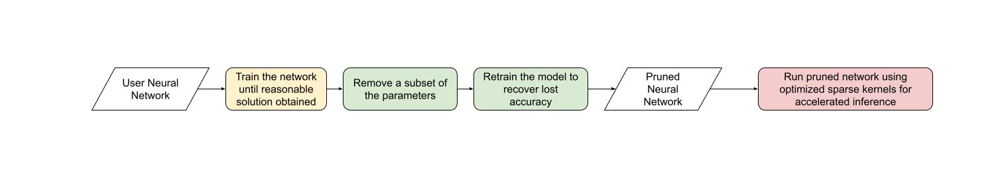

Note
Click here to download the full example code
(beta) Accelerating BERT with semi-structured (2:4) sparsity¶
Created On: Apr 22, 2024 | Last Updated: Apr 22, 2024 | Last Verified: Nov 05, 2024
Author: Jesse Cai
Overview¶
Like other forms of sparsity, semi-structured sparsity is a model optimization technique that seeks to reduce the memory overhead and latency of a neural network at the expense of some model accuracy. It is also known as fine-grained structured sparsity or 2:4 structured sparsity.
Semi-structured sparsity derives its name from its unique sparsity pattern, where n out of every 2n elements are pruned. We most often see n=2, hence 2:4 sparsity Semi-structured sparsity is particularly interesting because it can be efficiently accelerated on GPUs and doesn’t degrade model accuracy as much as other sparsity patterns.
With the introduction of semi-structured sparsity support, it is possible to prune and accelerate a semi-structured sparse model without leaving PyTorch. We will explain this process in this tutorial.
By the end of this tutorial, we will have sparsified a BERT question-answering model to be 2:4 sparse, fine-tuning it to recover nearly all F1 loss (86.92 dense vs 86.48 sparse). Finally, we will accelerate this 2:4 sparse model for inference, yielding a 1.3x speedup.
Requirements¶
PyTorch >= 2.1.
A NVIDIA GPU with semi-structured sparsity support (Compute Capability 8.0+).
This tutorial is designed for beginners to semi-structured sparsity and
sparsity in general. For users with existing 2:4 sparse models,
accelerating nn.Linear layers for inference with
to_sparse_semi_structured is quite straightforward. Here is an example:
import torch
from torch.sparse import to_sparse_semi_structured, SparseSemiStructuredTensor
from torch.utils.benchmark import Timer
SparseSemiStructuredTensor._FORCE_CUTLASS = True
# mask Linear weight to be 2:4 sparse
mask = torch.Tensor([0, 0, 1, 1]).tile((3072, 2560)).cuda().bool()
linear = torch.nn.Linear(10240, 3072).half().cuda().eval()
linear.weight = torch.nn.Parameter(mask * linear.weight)
x = torch.rand(3072, 10240).half().cuda()
with torch.inference_mode():
dense_output = linear(x)
dense_t = Timer(stmt="linear(x)",
globals={"linear": linear,
"x": x}).blocked_autorange().median * 1e3
# accelerate via SparseSemiStructuredTensor
linear.weight = torch.nn.Parameter(to_sparse_semi_structured(linear.weight))
sparse_output = linear(x)
sparse_t = Timer(stmt="linear(x)",
globals={"linear": linear,
"x": x}).blocked_autorange().median * 1e3
# sparse and dense matmul are numerically equivalent
# On an A100 80GB, we see: `Dense: 0.870ms Sparse: 0.630ms | Speedup: 1.382x`
assert torch.allclose(sparse_output, dense_output, atol=1e-3)
print(f"Dense: {dense_t:.3f}ms Sparse: {sparse_t:.3f}ms | Speedup: {(dense_t / sparse_t):.3f}x")
Dense: 2.921ms Sparse: 1.635ms | Speedup: 1.786x
What problem does semi-structured sparsity solve?¶
The general motivation behind sparsity is simple: if there are zeros in your network, you can optimize efficiency by not storing or computing those parameters. However, the specifics of sparsity are tricky. Zeroing out parameters doesn’t affect the latency / memory overhead of our model out of the box.
This is because the dense tensor still contains the pruned (zero) elements, which the dense matrix multiplication kernel will still operate on this elements. In order to realize performance gains, we need to swap out dense kernels for sparse kernels, which skip calculation involving pruned elements.
To do this, these kernels work on sparse matrices, which do not store the pruned elements and store the specified elements in a compressed format.
For semi-structured sparsity, we store exactly half of the original parameters along with some compressed metadata about how the elements were arranged.
There are many different sparse layouts, each with their own benefits and drawbacks. The 2:4 semi-structured sparse layout is particularly interesting for two reasons:
Unlike previous sparse formats, semi-structured sparsity was designed to be efficiently accelerated on GPUs. In 2020, NVIDIA introduced hardware support for semi-structured sparsity with their Ampere architecture, and have also released fast sparse kernels via CUTLASS cuSPARSELt.
At the same time, semi-structured sparsity tends to have a milder impact on model accuracy compared to other sparse formats, especially when accounting for more advanced pruning / fine-tuning methods. NVIDIA has shown in their white paper that a simple paradigm of magnitude pruning once to be 2:4 sparse and then retraining the model yields nearly identical model accuracies.
Semi-structured exists in a sweet spot, providing a 2x (theoretical) speedup at a much lower sparsity level (50%), while still being granular enough to preserve model accuracy.
Network |
Data Set |
Metric |
Dense FP16 |
Sparse FP16 |
|---|---|---|---|---|
ResNet-50 |
ImageNet |
Top-1 |
76.1 |
76.2 |
ResNeXt-101_32x8d |
ImageNet |
Top-1 |
79.3 |
79.3 |
Xception |
ImageNet |
Top-1 |
79.2 |
79.2 |
SSD-RN50 |
COCO2017 |
bbAP |
24.8 |
24.8 |
MaskRCNN-RN50 |
COCO2017 |
bbAP |
37.9 |
37.9 |
FairSeq Transformer |
EN-DE WMT14 |
BLEU |
28.2 |
28.5 |
BERT-Large |
SQuAD v1.1 |
F1 |
91.9 |
91.9 |
Semi-structured sparsity has an additional advantage from a workflow perspective. Because the sparsity level is fixed at 50%, it is easier to decompose the problem of sparsifying a model into two distinct subproblems:
Accuracy - How can we find a set of 2:4 sparse weights that minimize the accuracy degradation of our model?
Performance - How can we accelerate our 2:4 sparse weights for inference and reduced memory overhead?
The natural handoff point between these two problems are zeroed-out dense tensors. Our inference solution is designed to compress and accelerate tensors in this format. We anticipate many users coming up with custom masking solution, as this is an active area of research.
Now that we’ve learned a little more about semi-structured sparsity, let’s apply it to a BERT model trained on a question answering task, SQuAD.
Intro & Setup¶
Let’s start by importing all the packages we need.
# If you are running this in Google Colab, run:
# .. code-block: python
#
# !pip install datasets transformers evaluate accelerate pandas
#
import os
os.environ["WANDB_DISABLED"] = "true"
import collections
import datasets
import evaluate
import numpy as np
import torch
import torch.utils.benchmark as benchmark
from torch import nn
from torch.sparse import to_sparse_semi_structured, SparseSemiStructuredTensor
from torch.ao.pruning import WeightNormSparsifier
import transformers
# force CUTLASS use if ``cuSPARSELt`` is not available
SparseSemiStructuredTensor._FORCE_CUTLASS = True
torch.manual_seed(100)
<torch._C.Generator object at 0x7efe2d37dc50>
We’ll also need to define some helper functions that are specific to the dataset / task at hand. These were adapted from this Hugging Face course as a reference.
def preprocess_validation_function(examples, tokenizer):
inputs = tokenizer(
[q.strip() for q in examples["question"]],
examples["context"],
max_length=384,
truncation="only_second",
return_overflowing_tokens=True,
return_offsets_mapping=True,
padding="max_length",
)
sample_map = inputs.pop("overflow_to_sample_mapping")
example_ids = []
for i in range(len(inputs["input_ids"])):
sample_idx = sample_map[i]
example_ids.append(examples["id"][sample_idx])
sequence_ids = inputs.sequence_ids(i)
offset = inputs["offset_mapping"][i]
inputs["offset_mapping"][i] = [
o if sequence_ids[k] == 1 else None for k, o in enumerate(offset)
]
inputs["example_id"] = example_ids
return inputs
def preprocess_train_function(examples, tokenizer):
inputs = tokenizer(
[q.strip() for q in examples["question"]],
examples["context"],
max_length=384,
truncation="only_second",
return_offsets_mapping=True,
padding="max_length",
)
offset_mapping = inputs["offset_mapping"]
answers = examples["answers"]
start_positions = []
end_positions = []
for i, (offset, answer) in enumerate(zip(offset_mapping, answers)):
start_char = answer["answer_start"][0]
end_char = start_char + len(answer["text"][0])
sequence_ids = inputs.sequence_ids(i)
# Find the start and end of the context
idx = 0
while sequence_ids[idx] != 1:
idx += 1
context_start = idx
while sequence_ids[idx] == 1:
idx += 1
context_end = idx - 1
# If the answer is not fully inside the context, label it (0, 0)
if offset[context_start][0] > end_char or offset[context_end][1] < start_char:
start_positions.append(0)
end_positions.append(0)
else:
# Otherwise it's the start and end token positions
idx = context_start
while idx <= context_end and offset[idx][0] <= start_char:
idx += 1
start_positions.append(idx - 1)
idx = context_end
while idx >= context_start and offset[idx][1] >= end_char:
idx -= 1
end_positions.append(idx + 1)
inputs["start_positions"] = start_positions
inputs["end_positions"] = end_positions
return inputs
def compute_metrics(start_logits, end_logits, features, examples):
n_best = 20
max_answer_length = 30
metric = evaluate.load("squad")
example_to_features = collections.defaultdict(list)
for idx, feature in enumerate(features):
example_to_features[feature["example_id"]].append(idx)
predicted_answers = []
# for example in ``tqdm`` (examples):
for example in examples:
example_id = example["id"]
context = example["context"]
answers = []
# Loop through all features associated with that example
for feature_index in example_to_features[example_id]:
start_logit = start_logits[feature_index]
end_logit = end_logits[feature_index]
offsets = features[feature_index]["offset_mapping"]
start_indexes = np.argsort(start_logit)[-1 : -n_best - 1 : -1].tolist()
end_indexes = np.argsort(end_logit)[-1 : -n_best - 1 : -1].tolist()
for start_index in start_indexes:
for end_index in end_indexes:
# Skip answers that are not fully in the context
if offsets[start_index] is None or offsets[end_index] is None:
continue
# Skip answers with a length that is either < 0
# or > max_answer_length
if (
end_index < start_index
or end_index - start_index + 1 > max_answer_length
):
continue
answer = {
"text": context[
offsets[start_index][0] : offsets[end_index][1]
],
"logit_score": start_logit[start_index] + end_logit[end_index],
}
answers.append(answer)
# Select the answer with the best score
if len(answers) > 0:
best_answer = max(answers, key=lambda x: x["logit_score"])
predicted_answers.append(
{"id": example_id, "prediction_text": best_answer["text"]}
)
else:
predicted_answers.append({"id": example_id, "prediction_text": ""})
theoretical_answers = [
{"id": ex["id"], "answers": ex["answers"]} for ex in examples
]
return metric.compute(predictions=predicted_answers, references=theoretical_answers)
Now that those are defined, we just need one additional helper function, which will help us benchmark our model.
def measure_execution_time(model, batch_sizes, dataset):
dataset_for_model = dataset.remove_columns(["example_id", "offset_mapping"])
dataset_for_model.set_format("torch")
batch_size_to_time_sec = {}
for batch_size in batch_sizes:
batch = {
k: dataset_for_model[k][:batch_size].cuda()
for k in dataset_for_model.column_names
}
with torch.no_grad():
baseline_predictions = model(**batch)
timer = benchmark.Timer(
stmt="model(**batch)", globals={"model": model, "batch": batch}
)
p50 = timer.blocked_autorange().median * 1000
batch_size_to_time_sec[batch_size] = p50
model_c = torch.compile(model, fullgraph=True)
timer = benchmark.Timer(
stmt="model(**batch)", globals={"model": model_c, "batch": batch}
)
p50 = timer.blocked_autorange().median * 1000
batch_size_to_time_sec[f"{batch_size}_compile"] = p50
new_predictions = model_c(**batch)
return batch_size_to_time_sec
We will get started by loading our model and tokenizer, and then setting up our dataset.
# load model
model_name = "bert-base-cased"
tokenizer = transformers.AutoTokenizer.from_pretrained(model_name)
model = transformers.AutoModelForQuestionAnswering.from_pretrained(model_name)
print(f"Loading tokenizer: {model_name}")
print(f"Loading model: {model_name}")
# set up train and val dataset
squad_dataset = datasets.load_dataset("squad")
tokenized_squad_dataset = {}
tokenized_squad_dataset["train"] = squad_dataset["train"].map(
lambda x: preprocess_train_function(x, tokenizer), batched=True
)
tokenized_squad_dataset["validation"] = squad_dataset["validation"].map(
lambda x: preprocess_validation_function(x, tokenizer),
batched=True,
remove_columns=squad_dataset["train"].column_names,
)
data_collator = transformers.DataCollatorWithPadding(tokenizer=tokenizer)
Some weights of BertForQuestionAnswering were not initialized from the model checkpoint at bert-base-cased and are newly initialized: ['qa_outputs.bias', 'qa_outputs.weight']
You should probably TRAIN this model on a down-stream task to be able to use it for predictions and inference.
Loading tokenizer: bert-base-cased
Loading model: bert-base-cased
Downloading readme: 0%| | 0.00/7.62k [00:00<?, ?B/s]
Downloading readme: 100%|##########| 7.62k/7.62k [00:00<00:00, 44.1MB/s]
Downloading data: 0%| | 0.00/14.5M [00:00<?, ?B/s]
Downloading data: 73%|#######2 | 10.5M/14.5M [00:00<00:00, 86.8MB/s]
Downloading data: 100%|##########| 14.5M/14.5M [00:00<00:00, 102MB/s]
Downloading data: 0%| | 0.00/1.82M [00:00<?, ?B/s]
Downloading data: 100%|##########| 1.82M/1.82M [00:00<00:00, 32.3MB/s]
Generating train split: 0%| | 0/87599 [00:00<?, ? examples/s]
Generating train split: 68%|######8 | 60000/87599 [00:00<00:00, 592908.51 examples/s]
Generating train split: 100%|##########| 87599/87599 [00:00<00:00, 597227.64 examples/s]
Generating validation split: 0%| | 0/10570 [00:00<?, ? examples/s]
Generating validation split: 100%|##########| 10570/10570 [00:00<00:00, 545915.44 examples/s]
Map: 0%| | 0/87599 [00:00<?, ? examples/s]
Map: 1%|1 | 1000/87599 [00:00<00:49, 1747.95 examples/s]
Map: 2%|2 | 2000/87599 [00:01<00:43, 1950.21 examples/s]
Map: 3%|3 | 3000/87599 [00:01<00:41, 2044.05 examples/s]
Map: 5%|4 | 4000/87599 [00:01<00:40, 2084.15 examples/s]
Map: 6%|5 | 5000/87599 [00:02<00:39, 2085.36 examples/s]
Map: 7%|6 | 6000/87599 [00:02<00:38, 2116.36 examples/s]
Map: 8%|7 | 7000/87599 [00:03<00:37, 2136.76 examples/s]
Map: 9%|9 | 8000/87599 [00:03<00:37, 2142.74 examples/s]
Map: 10%|# | 9000/87599 [00:04<00:36, 2129.71 examples/s]
Map: 11%|#1 | 10000/87599 [00:04<00:36, 2120.83 examples/s]
Map: 13%|#2 | 11000/87599 [00:05<00:35, 2148.69 examples/s]
Map: 14%|#3 | 12000/87599 [00:05<00:34, 2169.90 examples/s]
Map: 15%|#4 | 13000/87599 [00:06<00:34, 2173.40 examples/s]
Map: 16%|#5 | 14000/87599 [00:06<00:33, 2189.39 examples/s]
Map: 17%|#7 | 15000/87599 [00:07<00:33, 2190.32 examples/s]
Map: 18%|#8 | 16000/87599 [00:07<00:32, 2191.61 examples/s]
Map: 19%|#9 | 17000/87599 [00:07<00:32, 2182.08 examples/s]
Map: 21%|## | 18000/87599 [00:08<00:32, 2172.35 examples/s]
Map: 22%|##1 | 19000/87599 [00:08<00:31, 2184.52 examples/s]
Map: 23%|##2 | 20000/87599 [00:09<00:31, 2176.29 examples/s]
Map: 24%|##3 | 21000/87599 [00:09<00:30, 2164.26 examples/s]
Map: 25%|##5 | 22000/87599 [00:10<00:30, 2153.09 examples/s]
Map: 26%|##6 | 23000/87599 [00:10<00:29, 2171.42 examples/s]
Map: 27%|##7 | 24000/87599 [00:11<00:29, 2147.08 examples/s]
Map: 29%|##8 | 25000/87599 [00:11<00:29, 2138.15 examples/s]
Map: 30%|##9 | 26000/87599 [00:12<00:28, 2139.47 examples/s]
Map: 31%|### | 27000/87599 [00:12<00:28, 2118.18 examples/s]
Map: 32%|###1 | 28000/87599 [00:13<00:28, 2127.20 examples/s]
Map: 33%|###3 | 29000/87599 [00:13<00:27, 2112.15 examples/s]
Map: 34%|###4 | 30000/87599 [00:14<00:27, 2116.38 examples/s]
Map: 35%|###5 | 31000/87599 [00:14<00:26, 2120.81 examples/s]
Map: 37%|###6 | 32000/87599 [00:14<00:26, 2113.96 examples/s]
Map: 38%|###7 | 33000/87599 [00:15<00:25, 2111.67 examples/s]
Map: 39%|###8 | 34000/87599 [00:15<00:25, 2097.00 examples/s]
Map: 40%|###9 | 35000/87599 [00:16<00:25, 2096.46 examples/s]
Map: 41%|####1 | 36000/87599 [00:16<00:24, 2104.65 examples/s]
Map: 42%|####2 | 37000/87599 [00:17<00:24, 2096.14 examples/s]
Map: 43%|####3 | 38000/87599 [00:17<00:23, 2105.80 examples/s]
Map: 45%|####4 | 39000/87599 [00:18<00:23, 2111.32 examples/s]
Map: 46%|####5 | 40000/87599 [00:18<00:22, 2092.03 examples/s]
Map: 47%|####6 | 41000/87599 [00:19<00:22, 2109.71 examples/s]
Map: 48%|####7 | 42000/87599 [00:19<00:21, 2116.09 examples/s]
Map: 49%|####9 | 43000/87599 [00:20<00:20, 2124.51 examples/s]
Map: 50%|##### | 44000/87599 [00:20<00:20, 2117.27 examples/s]
Map: 51%|#####1 | 45000/87599 [00:21<00:20, 2120.75 examples/s]
Map: 53%|#####2 | 46000/87599 [00:21<00:19, 2115.80 examples/s]
Map: 54%|#####3 | 47000/87599 [00:22<00:19, 2116.25 examples/s]
Map: 55%|#####4 | 48000/87599 [00:22<00:18, 2114.34 examples/s]
Map: 56%|#####5 | 49000/87599 [00:23<00:18, 2120.30 examples/s]
Map: 57%|#####7 | 50000/87599 [00:23<00:17, 2123.49 examples/s]
Map: 58%|#####8 | 51000/87599 [00:23<00:17, 2131.90 examples/s]
Map: 59%|#####9 | 52000/87599 [00:24<00:16, 2135.18 examples/s]
Map: 61%|###### | 53000/87599 [00:24<00:16, 2134.52 examples/s]
Map: 62%|######1 | 54000/87599 [00:25<00:15, 2120.67 examples/s]
Map: 63%|######2 | 55000/87599 [00:25<00:15, 2097.63 examples/s]
Map: 64%|######3 | 56000/87599 [00:26<00:15, 2086.97 examples/s]
Map: 65%|######5 | 57000/87599 [00:26<00:14, 2094.64 examples/s]
Map: 66%|######6 | 58000/87599 [00:27<00:14, 2101.36 examples/s]
Map: 67%|######7 | 59000/87599 [00:27<00:13, 2111.26 examples/s]
Map: 68%|######8 | 60000/87599 [00:28<00:13, 2122.99 examples/s]
Map: 70%|######9 | 61000/87599 [00:28<00:12, 2124.82 examples/s]
Map: 71%|####### | 62000/87599 [00:29<00:12, 2124.17 examples/s]
Map: 72%|#######1 | 63000/87599 [00:29<00:11, 2131.99 examples/s]
Map: 73%|#######3 | 64000/87599 [00:30<00:11, 2137.60 examples/s]
Map: 74%|#######4 | 65000/87599 [00:30<00:10, 2126.83 examples/s]
Map: 75%|#######5 | 66000/87599 [00:31<00:10, 2105.06 examples/s]
Map: 76%|#######6 | 67000/87599 [00:31<00:09, 2109.58 examples/s]
Map: 78%|#######7 | 68000/87599 [00:32<00:09, 2099.58 examples/s]
Map: 79%|#######8 | 69000/87599 [00:32<00:08, 2098.24 examples/s]
Map: 80%|#######9 | 70000/87599 [00:32<00:08, 2091.91 examples/s]
Map: 81%|########1 | 71000/87599 [00:33<00:07, 2099.90 examples/s]
Map: 82%|########2 | 72000/87599 [00:33<00:07, 2098.92 examples/s]
Map: 83%|########3 | 73000/87599 [00:34<00:07, 2083.84 examples/s]
Map: 84%|########4 | 74000/87599 [00:34<00:06, 2090.05 examples/s]
Map: 86%|########5 | 75000/87599 [00:35<00:06, 2077.95 examples/s]
Map: 87%|########6 | 76000/87599 [00:35<00:05, 2064.22 examples/s]
Map: 88%|########7 | 77000/87599 [00:36<00:05, 2065.27 examples/s]
Map: 89%|########9 | 78000/87599 [00:36<00:04, 2063.27 examples/s]
Map: 90%|######### | 79000/87599 [00:37<00:04, 2055.50 examples/s]
Map: 91%|#########1| 80000/87599 [00:37<00:03, 2065.91 examples/s]
Map: 92%|#########2| 81000/87599 [00:38<00:03, 2087.40 examples/s]
Map: 94%|#########3| 82000/87599 [00:38<00:02, 2099.97 examples/s]
Map: 95%|#########4| 83000/87599 [00:39<00:02, 2094.95 examples/s]
Map: 96%|#########5| 84000/87599 [00:39<00:01, 2103.62 examples/s]
Map: 97%|#########7| 85000/87599 [00:40<00:01, 2100.64 examples/s]
Map: 98%|#########8| 86000/87599 [00:40<00:00, 2105.45 examples/s]
Map: 99%|#########9| 87000/87599 [00:43<00:00, 766.09 examples/s]
Map: 100%|##########| 87599/87599 [00:44<00:00, 877.70 examples/s]
Map: 100%|##########| 87599/87599 [00:44<00:00, 1981.07 examples/s]
Map: 0%| | 0/10570 [00:00<?, ? examples/s]
Map: 9%|9 | 1000/10570 [00:00<00:03, 2819.53 examples/s]
Map: 19%|#8 | 2000/10570 [00:00<00:02, 2899.03 examples/s]
Map: 28%|##8 | 3000/10570 [00:01<00:02, 2869.44 examples/s]
Map: 38%|###7 | 4000/10570 [00:01<00:02, 2827.03 examples/s]
Map: 47%|####7 | 5000/10570 [00:01<00:02, 2611.62 examples/s]
Map: 57%|#####6 | 6000/10570 [00:02<00:01, 2623.29 examples/s]
Map: 66%|######6 | 7000/10570 [00:02<00:01, 2650.07 examples/s]
Map: 76%|#######5 | 8000/10570 [00:02<00:00, 2657.50 examples/s]
Map: 85%|########5 | 9000/10570 [00:03<00:00, 2660.04 examples/s]
Map: 95%|#########4| 10000/10570 [00:03<00:00, 2696.60 examples/s]
Map: 100%|##########| 10570/10570 [00:03<00:00, 2674.48 examples/s]
Map: 100%|##########| 10570/10570 [00:03<00:00, 2691.96 examples/s]
Establishing a baseline¶
Next, we’ll train a quick baseline of our model on SQuAD. This task asks our model to identify spans, or segments of text, in a given context (Wikipedia articles) that answer a given question. Running the following code gives me an F1 score of 86.9. This is quite close to the reported NVIDIA score and the difference is likely due to BERT-base vs. BERT-large or fine-tuning hyperparameters.
training_args = transformers.TrainingArguments(
"trainer",
num_train_epochs=1,
lr_scheduler_type="constant",
per_device_train_batch_size=32,
per_device_eval_batch_size=256,
logging_steps=50,
# Limit max steps for tutorial runners. Delete the below line to see the reported accuracy numbers.
max_steps=500,
report_to=None,
)
trainer = transformers.Trainer(
model,
training_args,
train_dataset=tokenized_squad_dataset["train"],
eval_dataset=tokenized_squad_dataset["validation"],
data_collator=data_collator,
tokenizer=tokenizer,
)
trainer.train()
# batch sizes to compare for eval
batch_sizes = [4, 16, 64, 256]
# 2:4 sparsity require fp16, so we cast here for a fair comparison
with torch.autocast("cuda"):
with torch.no_grad():
predictions = trainer.predict(tokenized_squad_dataset["validation"])
start_logits, end_logits = predictions.predictions
fp16_baseline = compute_metrics(
start_logits,
end_logits,
tokenized_squad_dataset["validation"],
squad_dataset["validation"],
)
fp16_time = measure_execution_time(
model,
batch_sizes,
tokenized_squad_dataset["validation"],
)
print("fp16", fp16_baseline)
print("cuda_fp16 time", fp16_time)
import pandas as pd
df = pd.DataFrame(trainer.state.log_history)
df.plot.line(x='step', y='loss', title="Loss vs. # steps", ylabel="loss")
torch.distributed process group is initialized, but parallel_mode != ParallelMode.DISTRIBUTED. In order to use Torch DDP, launch your script with `python -m torch.distributed.launch
Using the `WANDB_DISABLED` environment variable is deprecated and will be removed in v5. Use the --report_to flag to control the integrations used for logging result (for instance --report_to none).
0%| | 0/500 [00:00<?, ?it/s]
0%| | 1/500 [00:00<03:59, 2.09it/s]
0%| | 2/500 [00:00<03:46, 2.20it/s]
1%| | 3/500 [00:01<03:43, 2.22it/s]
1%| | 4/500 [00:01<03:42, 2.23it/s]
1%|1 | 5/500 [00:02<03:40, 2.24it/s]
1%|1 | 6/500 [00:02<03:40, 2.24it/s]
1%|1 | 7/500 [00:03<03:39, 2.25it/s]
2%|1 | 8/500 [00:03<03:38, 2.25it/s]
2%|1 | 9/500 [00:04<03:38, 2.25it/s]
2%|2 | 10/500 [00:04<03:37, 2.25it/s]
2%|2 | 11/500 [00:04<03:37, 2.25it/s]
2%|2 | 12/500 [00:05<03:36, 2.25it/s]
3%|2 | 13/500 [00:05<03:36, 2.25it/s]
3%|2 | 14/500 [00:06<03:35, 2.25it/s]
3%|3 | 15/500 [00:06<03:35, 2.25it/s]
3%|3 | 16/500 [00:07<03:34, 2.25it/s]
3%|3 | 17/500 [00:07<03:34, 2.25it/s]
4%|3 | 18/500 [00:08<03:33, 2.25it/s]
4%|3 | 19/500 [00:08<03:33, 2.25it/s]
4%|4 | 20/500 [00:08<03:32, 2.25it/s]
4%|4 | 21/500 [00:09<03:32, 2.25it/s]
4%|4 | 22/500 [00:09<03:32, 2.25it/s]
5%|4 | 23/500 [00:10<03:31, 2.25it/s]
5%|4 | 24/500 [00:10<03:31, 2.25it/s]
5%|5 | 25/500 [00:11<03:30, 2.25it/s]
5%|5 | 26/500 [00:11<03:30, 2.25it/s]
5%|5 | 27/500 [00:12<03:29, 2.25it/s]
6%|5 | 28/500 [00:12<03:29, 2.25it/s]
6%|5 | 29/500 [00:12<03:28, 2.25it/s]
6%|6 | 30/500 [00:13<03:28, 2.25it/s]
6%|6 | 31/500 [00:13<03:27, 2.26it/s]
6%|6 | 32/500 [00:14<03:27, 2.26it/s]
7%|6 | 33/500 [00:14<03:27, 2.26it/s]
7%|6 | 34/500 [00:15<03:26, 2.26it/s]
7%|7 | 35/500 [00:15<03:26, 2.25it/s]
7%|7 | 36/500 [00:16<03:25, 2.25it/s]
7%|7 | 37/500 [00:16<03:25, 2.25it/s]
8%|7 | 38/500 [00:16<03:24, 2.25it/s]
8%|7 | 39/500 [00:17<03:24, 2.25it/s]
8%|8 | 40/500 [00:17<03:24, 2.25it/s]
8%|8 | 41/500 [00:18<03:23, 2.25it/s]
8%|8 | 42/500 [00:18<03:23, 2.25it/s]
9%|8 | 43/500 [00:19<03:22, 2.26it/s]
9%|8 | 44/500 [00:19<03:22, 2.25it/s]
9%|9 | 45/500 [00:19<03:21, 2.25it/s]
9%|9 | 46/500 [00:20<03:21, 2.25it/s]
9%|9 | 47/500 [00:20<03:20, 2.25it/s]
10%|9 | 48/500 [00:21<03:20, 2.26it/s]
10%|9 | 49/500 [00:21<03:19, 2.26it/s]
10%|# | 50/500 [00:22<03:19, 2.25it/s]
{'loss': 3.8379, 'grad_norm': 14.336338996887207, 'learning_rate': 5e-05, 'epoch': 0.02}
10%|# | 50/500 [00:22<03:19, 2.25it/s]
10%|# | 51/500 [00:22<03:19, 2.25it/s]
10%|# | 52/500 [00:23<03:18, 2.25it/s]
11%|# | 53/500 [00:23<03:18, 2.25it/s]
11%|# | 54/500 [00:23<03:17, 2.25it/s]
11%|#1 | 55/500 [00:24<03:17, 2.25it/s]
11%|#1 | 56/500 [00:24<03:16, 2.25it/s]
11%|#1 | 57/500 [00:25<03:16, 2.25it/s]
12%|#1 | 58/500 [00:25<03:16, 2.25it/s]
12%|#1 | 59/500 [00:26<03:15, 2.26it/s]
12%|#2 | 60/500 [00:26<03:15, 2.25it/s]
12%|#2 | 61/500 [00:27<03:14, 2.26it/s]
12%|#2 | 62/500 [00:27<03:14, 2.26it/s]
13%|#2 | 63/500 [00:27<03:13, 2.25it/s]
13%|#2 | 64/500 [00:28<03:13, 2.26it/s]
13%|#3 | 65/500 [00:28<03:12, 2.25it/s]
13%|#3 | 66/500 [00:29<03:12, 2.26it/s]
13%|#3 | 67/500 [00:29<03:11, 2.26it/s]
14%|#3 | 68/500 [00:30<03:11, 2.26it/s]
14%|#3 | 69/500 [00:30<03:11, 2.26it/s]
14%|#4 | 70/500 [00:31<03:10, 2.26it/s]
14%|#4 | 71/500 [00:31<03:10, 2.26it/s]
14%|#4 | 72/500 [00:31<03:09, 2.26it/s]
15%|#4 | 73/500 [00:32<03:09, 2.26it/s]
15%|#4 | 74/500 [00:32<03:08, 2.26it/s]
15%|#5 | 75/500 [00:33<03:08, 2.26it/s]
15%|#5 | 76/500 [00:33<03:08, 2.25it/s]
15%|#5 | 77/500 [00:34<03:07, 2.25it/s]
16%|#5 | 78/500 [00:34<03:07, 2.25it/s]
16%|#5 | 79/500 [00:35<03:06, 2.26it/s]
16%|#6 | 80/500 [00:35<03:06, 2.26it/s]
16%|#6 | 81/500 [00:35<03:05, 2.25it/s]
16%|#6 | 82/500 [00:36<03:05, 2.26it/s]
17%|#6 | 83/500 [00:36<03:04, 2.26it/s]
17%|#6 | 84/500 [00:37<03:04, 2.25it/s]
17%|#7 | 85/500 [00:37<03:04, 2.26it/s]
17%|#7 | 86/500 [00:38<03:03, 2.26it/s]
17%|#7 | 87/500 [00:38<03:03, 2.26it/s]
18%|#7 | 88/500 [00:39<03:02, 2.25it/s]
18%|#7 | 89/500 [00:39<03:02, 2.25it/s]
18%|#8 | 90/500 [00:39<03:01, 2.26it/s]
18%|#8 | 91/500 [00:40<03:01, 2.26it/s]
18%|#8 | 92/500 [00:40<03:00, 2.26it/s]
19%|#8 | 93/500 [00:41<03:00, 2.26it/s]
19%|#8 | 94/500 [00:41<03:00, 2.26it/s]
19%|#9 | 95/500 [00:42<02:59, 2.26it/s]
19%|#9 | 96/500 [00:42<02:59, 2.26it/s]
19%|#9 | 97/500 [00:43<02:58, 2.26it/s]
20%|#9 | 98/500 [00:43<02:58, 2.26it/s]
20%|#9 | 99/500 [00:43<02:57, 2.26it/s]
20%|## | 100/500 [00:44<02:57, 2.26it/s]
{'loss': 2.3802, 'grad_norm': 15.064981460571289, 'learning_rate': 5e-05, 'epoch': 0.04}
20%|## | 100/500 [00:44<02:57, 2.26it/s]
20%|## | 101/500 [00:44<02:57, 2.25it/s]
20%|## | 102/500 [00:45<02:56, 2.25it/s]
21%|## | 103/500 [00:45<02:56, 2.25it/s]
21%|## | 104/500 [00:46<02:55, 2.26it/s]
21%|##1 | 105/500 [00:46<02:55, 2.26it/s]
21%|##1 | 106/500 [00:47<02:54, 2.26it/s]
21%|##1 | 107/500 [00:47<02:54, 2.26it/s]
22%|##1 | 108/500 [00:47<02:53, 2.26it/s]
22%|##1 | 109/500 [00:48<02:53, 2.26it/s]
22%|##2 | 110/500 [00:48<02:52, 2.26it/s]
22%|##2 | 111/500 [00:49<02:52, 2.26it/s]
22%|##2 | 112/500 [00:49<02:51, 2.26it/s]
23%|##2 | 113/500 [00:50<02:51, 2.26it/s]
23%|##2 | 114/500 [00:50<02:51, 2.26it/s]
23%|##3 | 115/500 [00:51<02:50, 2.25it/s]
23%|##3 | 116/500 [00:51<02:50, 2.26it/s]
23%|##3 | 117/500 [00:51<02:49, 2.26it/s]
24%|##3 | 118/500 [00:52<02:49, 2.26it/s]
24%|##3 | 119/500 [00:52<02:48, 2.26it/s]
24%|##4 | 120/500 [00:53<02:48, 2.26it/s]
24%|##4 | 121/500 [00:53<02:47, 2.26it/s]
24%|##4 | 122/500 [00:54<02:47, 2.26it/s]
25%|##4 | 123/500 [00:54<02:47, 2.26it/s]
25%|##4 | 124/500 [00:55<02:46, 2.26it/s]
25%|##5 | 125/500 [00:55<02:46, 2.26it/s]
25%|##5 | 126/500 [00:55<02:45, 2.26it/s]
25%|##5 | 127/500 [00:56<02:45, 2.26it/s]
26%|##5 | 128/500 [00:56<02:44, 2.26it/s]
26%|##5 | 129/500 [00:57<02:44, 2.26it/s]
26%|##6 | 130/500 [00:57<02:44, 2.26it/s]
26%|##6 | 131/500 [00:58<02:43, 2.25it/s]
26%|##6 | 132/500 [00:58<02:43, 2.26it/s]
27%|##6 | 133/500 [00:59<02:42, 2.26it/s]
27%|##6 | 134/500 [00:59<02:42, 2.26it/s]
27%|##7 | 135/500 [00:59<02:41, 2.26it/s]
27%|##7 | 136/500 [01:00<02:41, 2.26it/s]
27%|##7 | 137/500 [01:00<02:40, 2.26it/s]
28%|##7 | 138/500 [01:01<02:40, 2.26it/s]
28%|##7 | 139/500 [01:01<02:40, 2.25it/s]
28%|##8 | 140/500 [01:02<02:39, 2.25it/s]
28%|##8 | 141/500 [01:02<02:39, 2.25it/s]
28%|##8 | 142/500 [01:03<02:38, 2.26it/s]
29%|##8 | 143/500 [01:03<02:38, 2.26it/s]
29%|##8 | 144/500 [01:03<02:37, 2.26it/s]
29%|##9 | 145/500 [01:04<02:37, 2.26it/s]
29%|##9 | 146/500 [01:04<02:36, 2.26it/s]
29%|##9 | 147/500 [01:05<02:36, 2.26it/s]
30%|##9 | 148/500 [01:05<02:36, 2.26it/s]
30%|##9 | 149/500 [01:06<02:35, 2.26it/s]
30%|### | 150/500 [01:06<02:35, 2.26it/s]
{'loss': 1.8676, 'grad_norm': 11.241416931152344, 'learning_rate': 5e-05, 'epoch': 0.05}
30%|### | 150/500 [01:06<02:35, 2.26it/s]
30%|### | 151/500 [01:06<02:34, 2.25it/s]
30%|### | 152/500 [01:07<02:34, 2.25it/s]
31%|### | 153/500 [01:07<02:33, 2.25it/s]
31%|### | 154/500 [01:08<02:33, 2.25it/s]
31%|###1 | 155/500 [01:08<02:32, 2.26it/s]
31%|###1 | 156/500 [01:09<02:32, 2.26it/s]
31%|###1 | 157/500 [01:09<02:32, 2.26it/s]
32%|###1 | 158/500 [01:10<02:31, 2.26it/s]
32%|###1 | 159/500 [01:10<02:31, 2.25it/s]
32%|###2 | 160/500 [01:10<02:30, 2.25it/s]
32%|###2 | 161/500 [01:11<02:30, 2.26it/s]
32%|###2 | 162/500 [01:11<02:29, 2.25it/s]
33%|###2 | 163/500 [01:12<02:29, 2.26it/s]
33%|###2 | 164/500 [01:12<02:28, 2.26it/s]
33%|###3 | 165/500 [01:13<02:28, 2.26it/s]
33%|###3 | 166/500 [01:13<02:28, 2.26it/s]
33%|###3 | 167/500 [01:14<02:27, 2.26it/s]
34%|###3 | 168/500 [01:14<02:27, 2.26it/s]
34%|###3 | 169/500 [01:14<02:26, 2.26it/s]
34%|###4 | 170/500 [01:15<02:26, 2.26it/s]
34%|###4 | 171/500 [01:15<02:25, 2.26it/s]
34%|###4 | 172/500 [01:16<02:25, 2.26it/s]
35%|###4 | 173/500 [01:16<02:24, 2.26it/s]
35%|###4 | 174/500 [01:17<02:24, 2.26it/s]
35%|###5 | 175/500 [01:17<02:24, 2.26it/s]
35%|###5 | 176/500 [01:18<02:23, 2.26it/s]
35%|###5 | 177/500 [01:18<02:23, 2.26it/s]
36%|###5 | 178/500 [01:18<02:22, 2.26it/s]
36%|###5 | 179/500 [01:19<02:22, 2.26it/s]
36%|###6 | 180/500 [01:19<02:21, 2.26it/s]
36%|###6 | 181/500 [01:20<02:21, 2.26it/s]
36%|###6 | 182/500 [01:20<02:20, 2.26it/s]
37%|###6 | 183/500 [01:21<02:20, 2.26it/s]
37%|###6 | 184/500 [01:21<02:20, 2.26it/s]
37%|###7 | 185/500 [01:22<02:19, 2.26it/s]
37%|###7 | 186/500 [01:22<02:19, 2.26it/s]
37%|###7 | 187/500 [01:22<02:18, 2.26it/s]
38%|###7 | 188/500 [01:23<02:18, 2.26it/s]
38%|###7 | 189/500 [01:23<02:17, 2.26it/s]
38%|###8 | 190/500 [01:24<02:17, 2.26it/s]
38%|###8 | 191/500 [01:24<02:16, 2.26it/s]
38%|###8 | 192/500 [01:25<02:16, 2.26it/s]
39%|###8 | 193/500 [01:25<02:16, 2.26it/s]
39%|###8 | 194/500 [01:26<02:15, 2.26it/s]
39%|###9 | 195/500 [01:26<02:15, 2.26it/s]
39%|###9 | 196/500 [01:26<02:14, 2.26it/s]
39%|###9 | 197/500 [01:27<02:14, 2.26it/s]
40%|###9 | 198/500 [01:27<02:13, 2.26it/s]
40%|###9 | 199/500 [01:28<02:13, 2.26it/s]
40%|#### | 200/500 [01:28<02:13, 2.26it/s]
{'loss': 1.7282, 'grad_norm': 12.752493858337402, 'learning_rate': 5e-05, 'epoch': 0.07}
40%|#### | 200/500 [01:28<02:13, 2.26it/s]
40%|#### | 201/500 [01:29<02:12, 2.25it/s]
40%|#### | 202/500 [01:29<02:12, 2.25it/s]
41%|#### | 203/500 [01:30<02:11, 2.25it/s]
41%|#### | 204/500 [01:30<02:11, 2.26it/s]
41%|####1 | 205/500 [01:30<02:10, 2.25it/s]
41%|####1 | 206/500 [01:31<02:10, 2.26it/s]
41%|####1 | 207/500 [01:31<02:09, 2.26it/s]
42%|####1 | 208/500 [01:32<02:09, 2.26it/s]
42%|####1 | 209/500 [01:32<02:09, 2.26it/s]
42%|####2 | 210/500 [01:33<02:08, 2.26it/s]
42%|####2 | 211/500 [01:33<02:08, 2.26it/s]
42%|####2 | 212/500 [01:34<02:07, 2.26it/s]
43%|####2 | 213/500 [01:34<02:07, 2.26it/s]
43%|####2 | 214/500 [01:34<02:06, 2.26it/s]
43%|####3 | 215/500 [01:35<02:06, 2.26it/s]
43%|####3 | 216/500 [01:35<02:05, 2.26it/s]
43%|####3 | 217/500 [01:36<02:05, 2.26it/s]
44%|####3 | 218/500 [01:36<02:04, 2.26it/s]
44%|####3 | 219/500 [01:37<02:04, 2.26it/s]
44%|####4 | 220/500 [01:37<02:04, 2.26it/s]
44%|####4 | 221/500 [01:38<02:03, 2.26it/s]
44%|####4 | 222/500 [01:38<02:03, 2.26it/s]
45%|####4 | 223/500 [01:38<02:02, 2.26it/s]
45%|####4 | 224/500 [01:39<02:02, 2.25it/s]
45%|####5 | 225/500 [01:39<02:01, 2.25it/s]
45%|####5 | 226/500 [01:40<02:01, 2.25it/s]
45%|####5 | 227/500 [01:40<02:01, 2.26it/s]
46%|####5 | 228/500 [01:41<02:00, 2.26it/s]
46%|####5 | 229/500 [01:41<02:00, 2.26it/s]
46%|####6 | 230/500 [01:42<01:59, 2.26it/s]
46%|####6 | 231/500 [01:42<01:59, 2.26it/s]
46%|####6 | 232/500 [01:42<01:58, 2.26it/s]
47%|####6 | 233/500 [01:43<01:58, 2.26it/s]
47%|####6 | 234/500 [01:43<01:57, 2.26it/s]
47%|####6 | 235/500 [01:44<01:57, 2.26it/s]
47%|####7 | 236/500 [01:44<01:57, 2.26it/s]
47%|####7 | 237/500 [01:45<01:56, 2.26it/s]
48%|####7 | 238/500 [01:45<01:56, 2.26it/s]
48%|####7 | 239/500 [01:46<01:55, 2.26it/s]
48%|####8 | 240/500 [01:46<01:55, 2.26it/s]
48%|####8 | 241/500 [01:46<01:54, 2.26it/s]
48%|####8 | 242/500 [01:47<01:54, 2.26it/s]
49%|####8 | 243/500 [01:47<01:53, 2.26it/s]
49%|####8 | 244/500 [01:48<01:53, 2.26it/s]
49%|####9 | 245/500 [01:48<01:53, 2.26it/s]
49%|####9 | 246/500 [01:49<01:52, 2.26it/s]
49%|####9 | 247/500 [01:49<01:52, 2.26it/s]
50%|####9 | 248/500 [01:50<01:51, 2.26it/s]
50%|####9 | 249/500 [01:50<01:51, 2.26it/s]
50%|##### | 250/500 [01:50<01:50, 2.26it/s]
{'loss': 1.5847, 'grad_norm': 12.06578540802002, 'learning_rate': 5e-05, 'epoch': 0.09}
50%|##### | 250/500 [01:50<01:50, 2.26it/s]
50%|##### | 251/500 [01:51<01:50, 2.25it/s]
50%|##### | 252/500 [01:51<01:49, 2.26it/s]
51%|##### | 253/500 [01:52<01:49, 2.25it/s]
51%|##### | 254/500 [01:52<01:49, 2.26it/s]
51%|#####1 | 255/500 [01:53<01:48, 2.26it/s]
51%|#####1 | 256/500 [01:53<01:48, 2.26it/s]
51%|#####1 | 257/500 [01:53<01:47, 2.26it/s]
52%|#####1 | 258/500 [01:54<01:47, 2.26it/s]
52%|#####1 | 259/500 [01:54<01:46, 2.26it/s]
52%|#####2 | 260/500 [01:55<01:46, 2.26it/s]
52%|#####2 | 261/500 [01:55<01:45, 2.26it/s]
52%|#####2 | 262/500 [01:56<01:45, 2.26it/s]
53%|#####2 | 263/500 [01:56<01:45, 2.26it/s]
53%|#####2 | 264/500 [01:57<01:44, 2.26it/s]
53%|#####3 | 265/500 [01:57<01:44, 2.26it/s]
53%|#####3 | 266/500 [01:57<01:43, 2.26it/s]
53%|#####3 | 267/500 [01:58<01:43, 2.26it/s]
54%|#####3 | 268/500 [01:58<01:42, 2.26it/s]
54%|#####3 | 269/500 [01:59<01:42, 2.26it/s]
54%|#####4 | 270/500 [01:59<01:41, 2.26it/s]
54%|#####4 | 271/500 [02:00<01:41, 2.26it/s]
54%|#####4 | 272/500 [02:00<01:41, 2.26it/s]
55%|#####4 | 273/500 [02:01<01:40, 2.26it/s]
55%|#####4 | 274/500 [02:01<01:40, 2.26it/s]
55%|#####5 | 275/500 [02:01<01:39, 2.25it/s]
55%|#####5 | 276/500 [02:02<01:39, 2.26it/s]
55%|#####5 | 277/500 [02:02<01:38, 2.26it/s]
56%|#####5 | 278/500 [02:03<01:38, 2.26it/s]
56%|#####5 | 279/500 [02:03<01:37, 2.26it/s]
56%|#####6 | 280/500 [02:04<01:37, 2.26it/s]
56%|#####6 | 281/500 [02:04<01:37, 2.26it/s]
56%|#####6 | 282/500 [02:05<01:36, 2.26it/s]
57%|#####6 | 283/500 [02:05<01:36, 2.26it/s]
57%|#####6 | 284/500 [02:05<01:35, 2.26it/s]
57%|#####6 | 285/500 [02:06<01:35, 2.26it/s]
57%|#####7 | 286/500 [02:06<01:34, 2.26it/s]
57%|#####7 | 287/500 [02:07<01:34, 2.26it/s]
58%|#####7 | 288/500 [02:07<01:33, 2.26it/s]
58%|#####7 | 289/500 [02:08<01:33, 2.26it/s]
58%|#####8 | 290/500 [02:08<01:33, 2.26it/s]
58%|#####8 | 291/500 [02:09<01:32, 2.26it/s]
58%|#####8 | 292/500 [02:09<01:32, 2.26it/s]
59%|#####8 | 293/500 [02:09<01:31, 2.26it/s]
59%|#####8 | 294/500 [02:10<01:31, 2.26it/s]
59%|#####8 | 295/500 [02:10<01:30, 2.26it/s]
59%|#####9 | 296/500 [02:11<01:30, 2.26it/s]
59%|#####9 | 297/500 [02:11<01:30, 2.26it/s]
60%|#####9 | 298/500 [02:12<01:29, 2.25it/s]
60%|#####9 | 299/500 [02:12<01:29, 2.26it/s]
60%|###### | 300/500 [02:13<01:28, 2.25it/s]
{'loss': 1.5273, 'grad_norm': 12.072543144226074, 'learning_rate': 5e-05, 'epoch': 0.11}
60%|###### | 300/500 [02:13<01:28, 2.25it/s]
60%|###### | 301/500 [02:13<01:28, 2.25it/s]
60%|###### | 302/500 [02:13<01:27, 2.25it/s]
61%|###### | 303/500 [02:14<01:27, 2.25it/s]
61%|###### | 304/500 [02:14<01:26, 2.25it/s]
61%|######1 | 305/500 [02:15<01:26, 2.26it/s]
61%|######1 | 306/500 [02:15<01:25, 2.26it/s]
61%|######1 | 307/500 [02:16<01:25, 2.26it/s]
62%|######1 | 308/500 [02:16<01:25, 2.26it/s]
62%|######1 | 309/500 [02:17<01:24, 2.26it/s]
62%|######2 | 310/500 [02:17<01:24, 2.26it/s]
62%|######2 | 311/500 [02:17<01:23, 2.26it/s]
62%|######2 | 312/500 [02:18<01:23, 2.26it/s]
63%|######2 | 313/500 [02:18<01:22, 2.26it/s]
63%|######2 | 314/500 [02:19<01:22, 2.26it/s]
63%|######3 | 315/500 [02:19<01:22, 2.26it/s]
63%|######3 | 316/500 [02:20<01:21, 2.26it/s]
63%|######3 | 317/500 [02:20<01:21, 2.26it/s]
64%|######3 | 318/500 [02:21<01:20, 2.26it/s]
64%|######3 | 319/500 [02:21<01:20, 2.26it/s]
64%|######4 | 320/500 [02:21<01:19, 2.26it/s]
64%|######4 | 321/500 [02:22<01:19, 2.26it/s]
64%|######4 | 322/500 [02:22<01:18, 2.26it/s]
65%|######4 | 323/500 [02:23<01:18, 2.26it/s]
65%|######4 | 324/500 [02:23<01:18, 2.26it/s]
65%|######5 | 325/500 [02:24<01:17, 2.26it/s]
65%|######5 | 326/500 [02:24<01:17, 2.26it/s]
65%|######5 | 327/500 [02:25<01:16, 2.26it/s]
66%|######5 | 328/500 [02:25<01:16, 2.26it/s]
66%|######5 | 329/500 [02:25<01:15, 2.25it/s]
66%|######6 | 330/500 [02:26<01:15, 2.26it/s]
66%|######6 | 331/500 [02:26<01:14, 2.26it/s]
66%|######6 | 332/500 [02:27<01:14, 2.26it/s]
67%|######6 | 333/500 [02:27<01:14, 2.26it/s]
67%|######6 | 334/500 [02:28<01:13, 2.26it/s]
67%|######7 | 335/500 [02:28<01:13, 2.26it/s]
67%|######7 | 336/500 [02:29<01:12, 2.26it/s]
67%|######7 | 337/500 [02:29<01:12, 2.26it/s]
68%|######7 | 338/500 [02:29<01:11, 2.26it/s]
68%|######7 | 339/500 [02:30<01:11, 2.26it/s]
68%|######8 | 340/500 [02:30<01:10, 2.26it/s]
68%|######8 | 341/500 [02:31<01:10, 2.26it/s]
68%|######8 | 342/500 [02:31<01:10, 2.26it/s]
69%|######8 | 343/500 [02:32<01:09, 2.26it/s]
69%|######8 | 344/500 [02:32<01:09, 2.26it/s]
69%|######9 | 345/500 [02:33<01:08, 2.26it/s]
69%|######9 | 346/500 [02:33<01:08, 2.26it/s]
69%|######9 | 347/500 [02:33<01:07, 2.26it/s]
70%|######9 | 348/500 [02:34<01:07, 2.26it/s]
70%|######9 | 349/500 [02:34<01:06, 2.26it/s]
70%|####### | 350/500 [02:35<01:06, 2.25it/s]
{'loss': 1.5019, 'grad_norm': 9.409709930419922, 'learning_rate': 5e-05, 'epoch': 0.13}
70%|####### | 350/500 [02:35<01:06, 2.25it/s]
70%|####### | 351/500 [02:35<01:06, 2.25it/s]
70%|####### | 352/500 [02:36<01:05, 2.25it/s]
71%|####### | 353/500 [02:36<01:05, 2.25it/s]
71%|####### | 354/500 [02:36<01:04, 2.26it/s]
71%|#######1 | 355/500 [02:37<01:04, 2.26it/s]
71%|#######1 | 356/500 [02:37<01:03, 2.26it/s]
71%|#######1 | 357/500 [02:38<01:03, 2.26it/s]
72%|#######1 | 358/500 [02:38<01:02, 2.26it/s]
72%|#######1 | 359/500 [02:39<01:02, 2.26it/s]
72%|#######2 | 360/500 [02:39<01:02, 2.26it/s]
72%|#######2 | 361/500 [02:40<01:01, 2.26it/s]
72%|#######2 | 362/500 [02:40<01:01, 2.26it/s]
73%|#######2 | 363/500 [02:40<01:00, 2.26it/s]
73%|#######2 | 364/500 [02:41<01:00, 2.26it/s]
73%|#######3 | 365/500 [02:41<00:59, 2.26it/s]
73%|#######3 | 366/500 [02:42<00:59, 2.26it/s]
73%|#######3 | 367/500 [02:42<00:58, 2.26it/s]
74%|#######3 | 368/500 [02:43<00:58, 2.26it/s]
74%|#######3 | 369/500 [02:43<00:58, 2.26it/s]
74%|#######4 | 370/500 [02:44<00:57, 2.26it/s]
74%|#######4 | 371/500 [02:44<00:57, 2.26it/s]
74%|#######4 | 372/500 [02:44<00:56, 2.26it/s]
75%|#######4 | 373/500 [02:45<00:56, 2.26it/s]
75%|#######4 | 374/500 [02:45<00:55, 2.26it/s]
75%|#######5 | 375/500 [02:46<00:55, 2.25it/s]
75%|#######5 | 376/500 [02:46<00:54, 2.26it/s]
75%|#######5 | 377/500 [02:47<00:54, 2.26it/s]
76%|#######5 | 378/500 [02:47<00:54, 2.26it/s]
76%|#######5 | 379/500 [02:48<00:53, 2.26it/s]
76%|#######6 | 380/500 [02:48<00:53, 2.26it/s]
76%|#######6 | 381/500 [02:48<00:52, 2.26it/s]
76%|#######6 | 382/500 [02:49<00:52, 2.26it/s]
77%|#######6 | 383/500 [02:49<00:51, 2.26it/s]
77%|#######6 | 384/500 [02:50<00:51, 2.26it/s]
77%|#######7 | 385/500 [02:50<00:50, 2.26it/s]
77%|#######7 | 386/500 [02:51<00:50, 2.26it/s]
77%|#######7 | 387/500 [02:51<00:50, 2.26it/s]
78%|#######7 | 388/500 [02:52<00:49, 2.26it/s]
78%|#######7 | 389/500 [02:52<00:49, 2.26it/s]
78%|#######8 | 390/500 [02:52<00:48, 2.26it/s]
78%|#######8 | 391/500 [02:53<00:48, 2.26it/s]
78%|#######8 | 392/500 [02:53<00:47, 2.26it/s]
79%|#######8 | 393/500 [02:54<00:47, 2.26it/s]
79%|#######8 | 394/500 [02:54<00:47, 2.25it/s]
79%|#######9 | 395/500 [02:55<00:46, 2.26it/s]
79%|#######9 | 396/500 [02:55<00:46, 2.26it/s]
79%|#######9 | 397/500 [02:56<00:45, 2.26it/s]
80%|#######9 | 398/500 [02:56<00:45, 2.26it/s]
80%|#######9 | 399/500 [02:56<00:44, 2.26it/s]
80%|######## | 400/500 [02:57<00:44, 2.26it/s]
{'loss': 1.3895, 'grad_norm': 10.154120445251465, 'learning_rate': 5e-05, 'epoch': 0.15}
80%|######## | 400/500 [02:57<00:44, 2.26it/s]
80%|######## | 401/500 [02:57<00:43, 2.25it/s]
80%|######## | 402/500 [02:58<00:43, 2.25it/s]
81%|######## | 403/500 [02:58<00:43, 2.26it/s]
81%|######## | 404/500 [02:59<00:42, 2.26it/s]
81%|########1 | 405/500 [02:59<00:42, 2.26it/s]
81%|########1 | 406/500 [03:00<00:41, 2.26it/s]
81%|########1 | 407/500 [03:00<00:41, 2.26it/s]
82%|########1 | 408/500 [03:00<00:40, 2.26it/s]
82%|########1 | 409/500 [03:01<00:40, 2.26it/s]
82%|########2 | 410/500 [03:01<00:39, 2.26it/s]
82%|########2 | 411/500 [03:02<00:39, 2.25it/s]
82%|########2 | 412/500 [03:02<00:39, 2.26it/s]
83%|########2 | 413/500 [03:03<00:38, 2.26it/s]
83%|########2 | 414/500 [03:03<00:38, 2.26it/s]
83%|########2 | 415/500 [03:04<00:37, 2.26it/s]
83%|########3 | 416/500 [03:04<00:37, 2.26it/s]
83%|########3 | 417/500 [03:04<00:36, 2.26it/s]
84%|########3 | 418/500 [03:05<00:36, 2.26it/s]
84%|########3 | 419/500 [03:05<00:35, 2.26it/s]
84%|########4 | 420/500 [03:06<00:35, 2.26it/s]
84%|########4 | 421/500 [03:06<00:35, 2.26it/s]
84%|########4 | 422/500 [03:07<00:34, 2.25it/s]
85%|########4 | 423/500 [03:07<00:34, 2.25it/s]
85%|########4 | 424/500 [03:08<00:33, 2.26it/s]
85%|########5 | 425/500 [03:08<00:33, 2.26it/s]
85%|########5 | 426/500 [03:08<00:32, 2.26it/s]
85%|########5 | 427/500 [03:09<00:32, 2.26it/s]
86%|########5 | 428/500 [03:09<00:31, 2.26it/s]
86%|########5 | 429/500 [03:10<00:31, 2.25it/s]
86%|########6 | 430/500 [03:10<00:31, 2.25it/s]
86%|########6 | 431/500 [03:11<00:30, 2.25it/s]
86%|########6 | 432/500 [03:11<00:30, 2.25it/s]
87%|########6 | 433/500 [03:12<00:29, 2.26it/s]
87%|########6 | 434/500 [03:12<00:29, 2.26it/s]
87%|########7 | 435/500 [03:12<00:28, 2.26it/s]
87%|########7 | 436/500 [03:13<00:28, 2.26it/s]
87%|########7 | 437/500 [03:13<00:27, 2.26it/s]
88%|########7 | 438/500 [03:14<00:27, 2.26it/s]
88%|########7 | 439/500 [03:14<00:27, 2.26it/s]
88%|########8 | 440/500 [03:15<00:26, 2.26it/s]
88%|########8 | 441/500 [03:15<00:26, 2.26it/s]
88%|########8 | 442/500 [03:16<00:25, 2.26it/s]
89%|########8 | 443/500 [03:16<00:25, 2.26it/s]
89%|########8 | 444/500 [03:16<00:24, 2.26it/s]
89%|########9 | 445/500 [03:17<00:24, 2.26it/s]
89%|########9 | 446/500 [03:17<00:23, 2.26it/s]
89%|########9 | 447/500 [03:18<00:23, 2.26it/s]
90%|########9 | 448/500 [03:18<00:23, 2.26it/s]
90%|########9 | 449/500 [03:19<00:22, 2.26it/s]
90%|######### | 450/500 [03:19<00:22, 2.26it/s]
{'loss': 1.3443, 'grad_norm': 12.40009880065918, 'learning_rate': 5e-05, 'epoch': 0.16}
90%|######### | 450/500 [03:19<00:22, 2.26it/s]
90%|######### | 451/500 [03:20<00:21, 2.25it/s]
90%|######### | 452/500 [03:20<00:21, 2.26it/s]
91%|######### | 453/500 [03:20<00:20, 2.26it/s]
91%|######### | 454/500 [03:21<00:20, 2.25it/s]
91%|#########1| 455/500 [03:21<00:19, 2.26it/s]
91%|#########1| 456/500 [03:22<00:19, 2.25it/s]
91%|#########1| 457/500 [03:22<00:19, 2.25it/s]
92%|#########1| 458/500 [03:23<00:18, 2.26it/s]
92%|#########1| 459/500 [03:23<00:18, 2.26it/s]
92%|#########2| 460/500 [03:23<00:17, 2.26it/s]
92%|#########2| 461/500 [03:24<00:17, 2.26it/s]
92%|#########2| 462/500 [03:24<00:16, 2.26it/s]
93%|#########2| 463/500 [03:25<00:16, 2.26it/s]
93%|#########2| 464/500 [03:25<00:15, 2.26it/s]
93%|#########3| 465/500 [03:26<00:15, 2.26it/s]
93%|#########3| 466/500 [03:26<00:15, 2.26it/s]
93%|#########3| 467/500 [03:27<00:14, 2.26it/s]
94%|#########3| 468/500 [03:27<00:14, 2.26it/s]
94%|#########3| 469/500 [03:27<00:13, 2.26it/s]
94%|#########3| 470/500 [03:28<00:13, 2.26it/s]
94%|#########4| 471/500 [03:28<00:12, 2.25it/s]
94%|#########4| 472/500 [03:29<00:12, 2.25it/s]
95%|#########4| 473/500 [03:29<00:11, 2.25it/s]
95%|#########4| 474/500 [03:30<00:11, 2.25it/s]
95%|#########5| 475/500 [03:30<00:11, 2.26it/s]
95%|#########5| 476/500 [03:31<00:10, 2.25it/s]
95%|#########5| 477/500 [03:31<00:10, 2.26it/s]
96%|#########5| 478/500 [03:31<00:09, 2.26it/s]
96%|#########5| 479/500 [03:32<00:09, 2.26it/s]
96%|#########6| 480/500 [03:32<00:08, 2.26it/s]
96%|#########6| 481/500 [03:33<00:08, 2.26it/s]
96%|#########6| 482/500 [03:33<00:07, 2.26it/s]
97%|#########6| 483/500 [03:34<00:07, 2.26it/s]
97%|#########6| 484/500 [03:34<00:07, 2.26it/s]
97%|#########7| 485/500 [03:35<00:06, 2.26it/s]
97%|#########7| 486/500 [03:35<00:06, 2.26it/s]
97%|#########7| 487/500 [03:35<00:05, 2.26it/s]
98%|#########7| 488/500 [03:36<00:05, 2.26it/s]
98%|#########7| 489/500 [03:36<00:04, 2.26it/s]
98%|#########8| 490/500 [03:37<00:04, 2.26it/s]
98%|#########8| 491/500 [03:37<00:03, 2.26it/s]
98%|#########8| 492/500 [03:38<00:03, 2.26it/s]
99%|#########8| 493/500 [03:38<00:03, 2.26it/s]
99%|#########8| 494/500 [03:39<00:02, 2.26it/s]
99%|#########9| 495/500 [03:39<00:02, 2.26it/s]
99%|#########9| 496/500 [03:39<00:01, 2.26it/s]
99%|#########9| 497/500 [03:40<00:01, 2.26it/s]
100%|#########9| 498/500 [03:40<00:00, 2.26it/s]
100%|#########9| 499/500 [03:41<00:00, 2.26it/s]
100%|##########| 500/500 [03:41<00:00, 2.26it/s]
{'loss': 1.3397, 'grad_norm': 14.271581649780273, 'learning_rate': 5e-05, 'epoch': 0.18}
100%|##########| 500/500 [03:41<00:00, 2.26it/s]
{'train_runtime': 223.1448, 'train_samples_per_second': 71.702, 'train_steps_per_second': 2.241, 'train_loss': 1.8501380920410155, 'epoch': 0.18}
100%|##########| 500/500 [03:43<00:00, 2.26it/s]
100%|##########| 500/500 [03:43<00:00, 2.24it/s]
0%| | 0/43 [00:00<?, ?it/s]
5%|4 | 2/43 [00:00<00:12, 3.24it/s]
7%|6 | 3/43 [00:01<00:17, 2.29it/s]
9%|9 | 4/43 [00:01<00:19, 1.98it/s]
12%|#1 | 5/43 [00:02<00:20, 1.84it/s]
14%|#3 | 6/43 [00:03<00:20, 1.76it/s]
16%|#6 | 7/43 [00:03<00:20, 1.72it/s]
19%|#8 | 8/43 [00:04<00:20, 1.69it/s]
21%|## | 9/43 [00:04<00:20, 1.67it/s]
23%|##3 | 10/43 [00:05<00:19, 1.65it/s]
26%|##5 | 11/43 [00:06<00:19, 1.64it/s]
28%|##7 | 12/43 [00:06<00:18, 1.64it/s]
30%|### | 13/43 [00:07<00:18, 1.63it/s]
33%|###2 | 14/43 [00:08<00:17, 1.63it/s]
35%|###4 | 15/43 [00:08<00:17, 1.63it/s]
37%|###7 | 16/43 [00:09<00:16, 1.62it/s]
40%|###9 | 17/43 [00:09<00:16, 1.62it/s]
42%|####1 | 18/43 [00:10<00:15, 1.62it/s]
44%|####4 | 19/43 [00:11<00:14, 1.62it/s]
47%|####6 | 20/43 [00:11<00:14, 1.62it/s]
49%|####8 | 21/43 [00:12<00:13, 1.62it/s]
51%|#####1 | 22/43 [00:12<00:12, 1.62it/s]
53%|#####3 | 23/43 [00:13<00:12, 1.62it/s]
56%|#####5 | 24/43 [00:14<00:11, 1.62it/s]
58%|#####8 | 25/43 [00:14<00:11, 1.62it/s]
60%|###### | 26/43 [00:15<00:10, 1.62it/s]
63%|######2 | 27/43 [00:16<00:09, 1.62it/s]
65%|######5 | 28/43 [00:16<00:09, 1.62it/s]
67%|######7 | 29/43 [00:17<00:08, 1.62it/s]
70%|######9 | 30/43 [00:17<00:08, 1.62it/s]
72%|#######2 | 31/43 [00:18<00:07, 1.62it/s]
74%|#######4 | 32/43 [00:19<00:06, 1.62it/s]
77%|#######6 | 33/43 [00:19<00:06, 1.62it/s]
79%|#######9 | 34/43 [00:20<00:05, 1.62it/s]
81%|########1 | 35/43 [00:20<00:04, 1.62it/s]
84%|########3 | 36/43 [00:21<00:04, 1.62it/s]
86%|########6 | 37/43 [00:22<00:03, 1.62it/s]
88%|########8 | 38/43 [00:22<00:03, 1.62it/s]
91%|######### | 39/43 [00:23<00:02, 1.62it/s]
93%|#########3| 40/43 [00:24<00:01, 1.62it/s]
95%|#########5| 41/43 [00:24<00:01, 1.62it/s]
98%|#########7| 42/43 [00:25<00:00, 1.73it/s]
100%|##########| 43/43 [00:25<00:00, 1.70it/s]
Downloading builder script: 0%| | 0.00/4.53k [00:00<?, ?B/s]
Downloading builder script: 100%|##########| 4.53k/4.53k [00:00<00:00, 33.3MB/s]
Downloading extra modules: 0%| | 0.00/3.32k [00:00<?, ?B/s]
Downloading extra modules: 100%|##########| 3.32k/3.32k [00:00<00:00, 35.2MB/s]
fp16 {'exact_match': 71.32450331125828, 'f1': 80.51892831129346}
cuda_fp16 time {4: 9.413728689999061, '4_compile': 9.230502500031434, 16: 30.618059499988703, '16_compile': 31.727266999951098, 64: 118.78928249996079, '64_compile': 109.07129700001406, 256: 458.0433749999884, '256_compile': 414.9961020000319}
<Axes: title={'center': 'Loss vs. # steps'}, xlabel='step', ylabel='loss'>
Pruning BERT to be 2:4 sparse¶
Now that we have our baseline, it’s time we prune BERT. There are many different pruning strategies, but one of the most common is magnitude pruning, which seeks to remove the weights with the lowest L1 norm. Magnitude pruning was used by NVIDIA in all their results and is a common baseline.
To do this, we will use the torch.ao.pruning package, which contains
a weight-norm (magnitude) sparsifier. These sparsifiers work by applying
mask parametrizations to the weight tensors in a model. This lets them
simulate sparsity by masking out the pruned weights.
We’ll also have to decide what layers of the model to apply sparsity to,
which in this case is all of the nn.Linear layers, except for the
task-specific head outputs. That’s because semi-structured sparsity has
shape constraints,
and the task-specific nn.Linear layers do not satisfy them.
sparsifier = WeightNormSparsifier(
# apply sparsity to all blocks
sparsity_level=1.0,
# shape of 4 elements is a block
sparse_block_shape=(1, 4),
# two zeros for every block of 4
zeros_per_block=2
)
# add to config if ``nn.Linear`` and in the BERT model.
sparse_config = [
{"tensor_fqn": f"{fqn}.weight"}
for fqn, module in model.named_modules()
if isinstance(module, nn.Linear) and "layer" in fqn
]
The first step for pruning the model is to insert parametrizations for
masking the weights of the model. This is done by the prepare step.
Anytime we try to access the .weight we will get mask * weight
instead.
# Prepare the model, insert fake-sparsity parametrizations for training
sparsifier.prepare(model, sparse_config)
print(model.bert.encoder.layer[0].output)
BertOutput(
(dense): ParametrizedLinear(
in_features=3072, out_features=768, bias=True
(parametrizations): ModuleDict(
(weight): ParametrizationList(
(0): FakeSparsity()
)
)
)
(LayerNorm): LayerNorm((768,), eps=1e-12, elementwise_affine=True)
(dropout): Dropout(p=0.1, inplace=False)
)
Then, we’ll take a single pruning step. All pruners implement a
update_mask() method that updates the mask with the logic being
determined by the pruner implementation. The step method calls this
update_mask functions for the weights specified in the sparse
config.
We will also evaluate the model to show the accuracy degradation of zero-shot pruning, or pruning without fine-tuning / retraining.
sparsifier.step()
with torch.autocast("cuda"):
with torch.no_grad():
predictions = trainer.predict(tokenized_squad_dataset["validation"])
pruned = compute_metrics(
*predictions.predictions,
tokenized_squad_dataset["validation"],
squad_dataset["validation"],
)
print("pruned eval metrics:", pruned)
0%| | 0/43 [00:00<?, ?it/s]
5%|4 | 2/43 [00:00<00:12, 3.23it/s]
7%|6 | 3/43 [00:01<00:17, 2.28it/s]
9%|9 | 4/43 [00:01<00:19, 1.97it/s]
12%|#1 | 5/43 [00:02<00:20, 1.83it/s]
14%|#3 | 6/43 [00:03<00:21, 1.75it/s]
16%|#6 | 7/43 [00:03<00:21, 1.71it/s]
19%|#8 | 8/43 [00:04<00:20, 1.67it/s]
21%|## | 9/43 [00:04<00:20, 1.66it/s]
23%|##3 | 10/43 [00:05<00:20, 1.64it/s]
26%|##5 | 11/43 [00:06<00:19, 1.63it/s]
28%|##7 | 12/43 [00:06<00:19, 1.63it/s]
30%|### | 13/43 [00:07<00:18, 1.62it/s]
33%|###2 | 14/43 [00:08<00:17, 1.62it/s]
35%|###4 | 15/43 [00:08<00:17, 1.62it/s]
37%|###7 | 16/43 [00:09<00:16, 1.62it/s]
40%|###9 | 17/43 [00:09<00:16, 1.61it/s]
42%|####1 | 18/43 [00:10<00:15, 1.61it/s]
44%|####4 | 19/43 [00:11<00:14, 1.61it/s]
47%|####6 | 20/43 [00:11<00:14, 1.61it/s]
49%|####8 | 21/43 [00:12<00:13, 1.61it/s]
51%|#####1 | 22/43 [00:13<00:13, 1.61it/s]
53%|#####3 | 23/43 [00:13<00:12, 1.61it/s]
56%|#####5 | 24/43 [00:14<00:11, 1.61it/s]
58%|#####8 | 25/43 [00:14<00:11, 1.61it/s]
60%|###### | 26/43 [00:15<00:10, 1.61it/s]
63%|######2 | 27/43 [00:16<00:09, 1.61it/s]
65%|######5 | 28/43 [00:16<00:09, 1.61it/s]
67%|######7 | 29/43 [00:17<00:08, 1.61it/s]
70%|######9 | 30/43 [00:17<00:08, 1.61it/s]
72%|#######2 | 31/43 [00:18<00:07, 1.61it/s]
74%|#######4 | 32/43 [00:19<00:06, 1.61it/s]
77%|#######6 | 33/43 [00:19<00:06, 1.61it/s]
79%|#######9 | 34/43 [00:20<00:05, 1.61it/s]
81%|########1 | 35/43 [00:21<00:04, 1.61it/s]
84%|########3 | 36/43 [00:21<00:04, 1.61it/s]
86%|########6 | 37/43 [00:22<00:03, 1.61it/s]
88%|########8 | 38/43 [00:22<00:03, 1.61it/s]
91%|######### | 39/43 [00:23<00:02, 1.61it/s]
93%|#########3| 40/43 [00:24<00:01, 1.61it/s]
95%|#########5| 41/43 [00:24<00:01, 1.61it/s]
98%|#########7| 42/43 [00:25<00:00, 1.72it/s]
100%|##########| 43/43 [00:25<00:00, 1.69it/s]
pruned eval metrics: {'exact_match': 30.264900662251655, 'f1': 41.879586809195885}
In this state, we can start fine-tuning the model, updating the elements
that wouldn’t be pruned to better account for the accuracy loss. Once
we’ve reached a satisfied state, we can call squash_mask to fuse the
mask and the weight together. This will remove the parametrizations and
we are left with a zeroed-out 2:4 dense model.
trainer.train()
sparsifier.squash_mask()
torch.set_printoptions(edgeitems=4)
print(model.bert.encoder.layer[0].intermediate.dense.weight[:8, :8])
df["sparse_loss"] = pd.DataFrame(trainer.state.log_history)["loss"]
df.plot.line(x='step', y=["loss", "sparse_loss"], title="Loss vs. # steps", ylabel="loss")
0%| | 0/500 [00:00<?, ?it/s]
0%| | 1/500 [00:00<04:05, 2.03it/s]
0%| | 2/500 [00:00<03:52, 2.14it/s]
1%| | 3/500 [00:01<03:48, 2.18it/s]
1%| | 4/500 [00:01<03:45, 2.20it/s]
1%|1 | 5/500 [00:02<03:44, 2.21it/s]
1%|1 | 6/500 [00:02<03:43, 2.21it/s]
1%|1 | 7/500 [00:03<03:42, 2.22it/s]
2%|1 | 8/500 [00:03<03:41, 2.22it/s]
2%|1 | 9/500 [00:04<03:41, 2.22it/s]
2%|2 | 10/500 [00:04<03:40, 2.22it/s]
2%|2 | 11/500 [00:04<03:39, 2.22it/s]
2%|2 | 12/500 [00:05<03:39, 2.22it/s]
3%|2 | 13/500 [00:05<03:38, 2.22it/s]
3%|2 | 14/500 [00:06<03:38, 2.23it/s]
3%|3 | 15/500 [00:06<03:37, 2.23it/s]
3%|3 | 16/500 [00:07<03:37, 2.23it/s]
3%|3 | 17/500 [00:07<03:37, 2.22it/s]
4%|3 | 18/500 [00:08<03:36, 2.23it/s]
4%|3 | 19/500 [00:08<03:36, 2.23it/s]
4%|4 | 20/500 [00:09<03:35, 2.23it/s]
4%|4 | 21/500 [00:09<03:35, 2.23it/s]
4%|4 | 22/500 [00:09<03:34, 2.23it/s]
5%|4 | 23/500 [00:10<03:34, 2.23it/s]
5%|4 | 24/500 [00:10<03:33, 2.23it/s]
5%|5 | 25/500 [00:11<03:33, 2.23it/s]
5%|5 | 26/500 [00:11<03:32, 2.23it/s]
5%|5 | 27/500 [00:12<03:32, 2.23it/s]
6%|5 | 28/500 [00:12<03:32, 2.22it/s]
6%|5 | 29/500 [00:13<03:31, 2.23it/s]
6%|6 | 30/500 [00:13<03:31, 2.22it/s]
6%|6 | 31/500 [00:13<03:30, 2.22it/s]
6%|6 | 32/500 [00:14<03:30, 2.23it/s]
7%|6 | 33/500 [00:14<03:29, 2.23it/s]
7%|6 | 34/500 [00:15<03:29, 2.23it/s]
7%|7 | 35/500 [00:15<03:28, 2.23it/s]
7%|7 | 36/500 [00:16<03:28, 2.23it/s]
7%|7 | 37/500 [00:16<03:28, 2.23it/s]
8%|7 | 38/500 [00:17<03:27, 2.23it/s]
8%|7 | 39/500 [00:17<03:27, 2.23it/s]
8%|8 | 40/500 [00:18<03:26, 2.23it/s]
8%|8 | 41/500 [00:18<03:26, 2.23it/s]
8%|8 | 42/500 [00:18<03:25, 2.23it/s]
9%|8 | 43/500 [00:19<03:25, 2.23it/s]
9%|8 | 44/500 [00:19<03:24, 2.23it/s]
9%|9 | 45/500 [00:20<03:24, 2.23it/s]
9%|9 | 46/500 [00:20<03:24, 2.23it/s]
9%|9 | 47/500 [00:21<03:23, 2.23it/s]
10%|9 | 48/500 [00:21<03:23, 2.23it/s]
10%|9 | 49/500 [00:22<03:22, 2.23it/s]
10%|# | 50/500 [00:22<03:22, 2.23it/s]
{'loss': 1.8761, 'grad_norm': 11.231263160705566, 'learning_rate': 5e-05, 'epoch': 0.02}
10%|# | 50/500 [00:22<03:22, 2.23it/s]
10%|# | 51/500 [00:22<03:21, 2.22it/s]
10%|# | 52/500 [00:23<03:21, 2.22it/s]
11%|# | 53/500 [00:23<03:20, 2.22it/s]
11%|# | 54/500 [00:24<03:20, 2.22it/s]
11%|#1 | 55/500 [00:24<03:20, 2.22it/s]
11%|#1 | 56/500 [00:25<03:19, 2.22it/s]
11%|#1 | 57/500 [00:25<03:19, 2.22it/s]
12%|#1 | 58/500 [00:26<03:18, 2.22it/s]
12%|#1 | 59/500 [00:26<03:18, 2.23it/s]
12%|#2 | 60/500 [00:27<03:17, 2.22it/s]
12%|#2 | 61/500 [00:27<03:17, 2.23it/s]
12%|#2 | 62/500 [00:27<03:16, 2.23it/s]
13%|#2 | 63/500 [00:28<03:16, 2.23it/s]
13%|#2 | 64/500 [00:28<03:15, 2.23it/s]
13%|#3 | 65/500 [00:29<03:15, 2.23it/s]
13%|#3 | 66/500 [00:29<03:14, 2.23it/s]
13%|#3 | 67/500 [00:30<03:14, 2.23it/s]
14%|#3 | 68/500 [00:30<03:14, 2.23it/s]
14%|#3 | 69/500 [00:31<03:13, 2.23it/s]
14%|#4 | 70/500 [00:31<03:13, 2.23it/s]
14%|#4 | 71/500 [00:31<03:12, 2.23it/s]
14%|#4 | 72/500 [00:32<03:12, 2.23it/s]
15%|#4 | 73/500 [00:32<03:11, 2.22it/s]
15%|#4 | 74/500 [00:33<03:11, 2.22it/s]
15%|#5 | 75/500 [00:33<03:11, 2.22it/s]
15%|#5 | 76/500 [00:34<03:10, 2.22it/s]
15%|#5 | 77/500 [00:34<03:10, 2.22it/s]
16%|#5 | 78/500 [00:35<03:09, 2.22it/s]
16%|#5 | 79/500 [00:35<03:09, 2.22it/s]
16%|#6 | 80/500 [00:35<03:08, 2.22it/s]
16%|#6 | 81/500 [00:36<03:08, 2.22it/s]
16%|#6 | 82/500 [00:36<03:07, 2.22it/s]
17%|#6 | 83/500 [00:37<03:07, 2.23it/s]
17%|#6 | 84/500 [00:37<03:06, 2.23it/s]
17%|#7 | 85/500 [00:38<03:06, 2.23it/s]
17%|#7 | 86/500 [00:38<03:05, 2.23it/s]
17%|#7 | 87/500 [00:39<03:05, 2.23it/s]
18%|#7 | 88/500 [00:39<03:05, 2.23it/s]
18%|#7 | 89/500 [00:40<03:04, 2.23it/s]
18%|#8 | 90/500 [00:40<03:04, 2.23it/s]
18%|#8 | 91/500 [00:40<03:03, 2.23it/s]
18%|#8 | 92/500 [00:41<03:03, 2.23it/s]
19%|#8 | 93/500 [00:41<03:02, 2.23it/s]
19%|#8 | 94/500 [00:42<03:02, 2.23it/s]
19%|#9 | 95/500 [00:42<03:01, 2.23it/s]
19%|#9 | 96/500 [00:43<03:01, 2.22it/s]
19%|#9 | 97/500 [00:43<03:01, 2.23it/s]
20%|#9 | 98/500 [00:44<03:00, 2.23it/s]
20%|#9 | 99/500 [00:44<03:00, 2.23it/s]
20%|## | 100/500 [00:44<02:59, 2.23it/s]
{'loss': 1.4079, 'grad_norm': 8.975424766540527, 'learning_rate': 5e-05, 'epoch': 0.04}
20%|## | 100/500 [00:44<02:59, 2.23it/s]
20%|## | 101/500 [00:45<02:59, 2.22it/s]
20%|## | 102/500 [00:45<02:58, 2.22it/s]
21%|## | 103/500 [00:46<02:58, 2.22it/s]
21%|## | 104/500 [00:46<02:57, 2.22it/s]
21%|##1 | 105/500 [00:47<02:57, 2.23it/s]
21%|##1 | 106/500 [00:47<02:57, 2.23it/s]
21%|##1 | 107/500 [00:48<02:56, 2.23it/s]
22%|##1 | 108/500 [00:48<02:56, 2.23it/s]
22%|##1 | 109/500 [00:49<02:55, 2.23it/s]
22%|##2 | 110/500 [00:49<02:55, 2.23it/s]
22%|##2 | 111/500 [00:49<02:54, 2.23it/s]
22%|##2 | 112/500 [00:50<02:54, 2.23it/s]
23%|##2 | 113/500 [00:50<02:53, 2.23it/s]
23%|##2 | 114/500 [00:51<02:53, 2.23it/s]
23%|##3 | 115/500 [00:51<02:53, 2.23it/s]
23%|##3 | 116/500 [00:52<02:52, 2.23it/s]
23%|##3 | 117/500 [00:52<02:52, 2.23it/s]
24%|##3 | 118/500 [00:53<02:51, 2.23it/s]
24%|##3 | 119/500 [00:53<02:51, 2.23it/s]
24%|##4 | 120/500 [00:53<02:50, 2.23it/s]
24%|##4 | 121/500 [00:54<02:50, 2.23it/s]
24%|##4 | 122/500 [00:54<02:49, 2.23it/s]
25%|##4 | 123/500 [00:55<02:49, 2.23it/s]
25%|##4 | 124/500 [00:55<02:48, 2.23it/s]
25%|##5 | 125/500 [00:56<02:48, 2.23it/s]
25%|##5 | 126/500 [00:56<02:48, 2.23it/s]
25%|##5 | 127/500 [00:57<02:47, 2.23it/s]
26%|##5 | 128/500 [00:57<02:47, 2.23it/s]
26%|##5 | 129/500 [00:58<02:46, 2.23it/s]
26%|##6 | 130/500 [00:58<02:46, 2.23it/s]
26%|##6 | 131/500 [00:58<02:45, 2.23it/s]
26%|##6 | 132/500 [00:59<02:45, 2.23it/s]
27%|##6 | 133/500 [00:59<02:44, 2.23it/s]
27%|##6 | 134/500 [01:00<02:44, 2.23it/s]
27%|##7 | 135/500 [01:00<02:43, 2.23it/s]
27%|##7 | 136/500 [01:01<02:43, 2.23it/s]
27%|##7 | 137/500 [01:01<02:43, 2.23it/s]
28%|##7 | 138/500 [01:02<02:42, 2.23it/s]
28%|##7 | 139/500 [01:02<02:42, 2.23it/s]
28%|##8 | 140/500 [01:02<02:41, 2.23it/s]
28%|##8 | 141/500 [01:03<02:41, 2.23it/s]
28%|##8 | 142/500 [01:03<02:40, 2.23it/s]
29%|##8 | 143/500 [01:04<02:40, 2.23it/s]
29%|##8 | 144/500 [01:04<02:39, 2.23it/s]
29%|##9 | 145/500 [01:05<02:39, 2.23it/s]
29%|##9 | 146/500 [01:05<02:39, 2.23it/s]
29%|##9 | 147/500 [01:06<02:38, 2.23it/s]
30%|##9 | 148/500 [01:06<02:38, 2.23it/s]
30%|##9 | 149/500 [01:06<02:37, 2.22it/s]
30%|### | 150/500 [01:07<02:37, 2.23it/s]
{'loss': 1.184, 'grad_norm': 9.126317977905273, 'learning_rate': 5e-05, 'epoch': 0.05}
30%|### | 150/500 [01:07<02:37, 2.23it/s]
30%|### | 151/500 [01:07<02:36, 2.22it/s]
30%|### | 152/500 [01:08<02:36, 2.22it/s]
31%|### | 153/500 [01:08<02:35, 2.22it/s]
31%|### | 154/500 [01:09<02:35, 2.22it/s]
31%|###1 | 155/500 [01:09<02:35, 2.23it/s]
31%|###1 | 156/500 [01:10<02:34, 2.23it/s]
31%|###1 | 157/500 [01:10<02:34, 2.23it/s]
32%|###1 | 158/500 [01:11<02:33, 2.23it/s]
32%|###1 | 159/500 [01:11<02:33, 2.23it/s]
32%|###2 | 160/500 [01:11<02:32, 2.23it/s]
32%|###2 | 161/500 [01:12<02:32, 2.23it/s]
32%|###2 | 162/500 [01:12<02:31, 2.23it/s]
33%|###2 | 163/500 [01:13<02:31, 2.23it/s]
33%|###2 | 164/500 [01:13<02:30, 2.23it/s]
33%|###3 | 165/500 [01:14<02:30, 2.23it/s]
33%|###3 | 166/500 [01:14<02:30, 2.23it/s]
33%|###3 | 167/500 [01:15<02:29, 2.23it/s]
34%|###3 | 168/500 [01:15<02:29, 2.23it/s]
34%|###3 | 169/500 [01:15<02:28, 2.23it/s]
34%|###4 | 170/500 [01:16<02:28, 2.23it/s]
34%|###4 | 171/500 [01:16<02:27, 2.23it/s]
34%|###4 | 172/500 [01:17<02:27, 2.23it/s]
35%|###4 | 173/500 [01:17<02:26, 2.23it/s]
35%|###4 | 174/500 [01:18<02:26, 2.23it/s]
35%|###5 | 175/500 [01:18<02:25, 2.23it/s]
35%|###5 | 176/500 [01:19<02:25, 2.23it/s]
35%|###5 | 177/500 [01:19<02:25, 2.23it/s]
36%|###5 | 178/500 [01:20<02:24, 2.23it/s]
36%|###5 | 179/500 [01:20<02:24, 2.22it/s]
36%|###6 | 180/500 [01:20<02:23, 2.23it/s]
36%|###6 | 181/500 [01:21<02:23, 2.22it/s]
36%|###6 | 182/500 [01:21<02:22, 2.23it/s]
37%|###6 | 183/500 [01:22<02:22, 2.23it/s]
37%|###6 | 184/500 [01:22<02:21, 2.23it/s]
37%|###7 | 185/500 [01:23<02:21, 2.23it/s]
37%|###7 | 186/500 [01:23<02:21, 2.23it/s]
37%|###7 | 187/500 [01:24<02:20, 2.23it/s]
38%|###7 | 188/500 [01:24<02:20, 2.23it/s]
38%|###7 | 189/500 [01:24<02:19, 2.23it/s]
38%|###8 | 190/500 [01:25<02:19, 2.23it/s]
38%|###8 | 191/500 [01:25<02:18, 2.22it/s]
38%|###8 | 192/500 [01:26<02:18, 2.23it/s]
39%|###8 | 193/500 [01:26<02:17, 2.23it/s]
39%|###8 | 194/500 [01:27<02:17, 2.23it/s]
39%|###9 | 195/500 [01:27<02:17, 2.23it/s]
39%|###9 | 196/500 [01:28<02:16, 2.23it/s]
39%|###9 | 197/500 [01:28<02:16, 2.23it/s]
40%|###9 | 198/500 [01:29<02:15, 2.23it/s]
40%|###9 | 199/500 [01:29<02:15, 2.23it/s]
40%|#### | 200/500 [01:29<02:14, 2.23it/s]
{'loss': 1.229, 'grad_norm': 8.193763732910156, 'learning_rate': 5e-05, 'epoch': 0.07}
40%|#### | 200/500 [01:29<02:14, 2.23it/s]
40%|#### | 201/500 [01:30<02:14, 2.22it/s]
40%|#### | 202/500 [01:30<02:13, 2.22it/s]
41%|#### | 203/500 [01:31<02:13, 2.22it/s]
41%|#### | 204/500 [01:31<02:13, 2.23it/s]
41%|####1 | 205/500 [01:32<02:12, 2.23it/s]
41%|####1 | 206/500 [01:32<02:12, 2.23it/s]
41%|####1 | 207/500 [01:33<02:11, 2.23it/s]
42%|####1 | 208/500 [01:33<02:11, 2.23it/s]
42%|####1 | 209/500 [01:33<02:10, 2.22it/s]
42%|####2 | 210/500 [01:34<02:10, 2.22it/s]
42%|####2 | 211/500 [01:34<02:09, 2.23it/s]
42%|####2 | 212/500 [01:35<02:09, 2.23it/s]
43%|####2 | 213/500 [01:35<02:08, 2.23it/s]
43%|####2 | 214/500 [01:36<02:08, 2.23it/s]
43%|####3 | 215/500 [01:36<02:08, 2.22it/s]
43%|####3 | 216/500 [01:37<02:07, 2.23it/s]
43%|####3 | 217/500 [01:37<02:07, 2.23it/s]
44%|####3 | 218/500 [01:37<02:06, 2.23it/s]
44%|####3 | 219/500 [01:38<02:06, 2.23it/s]
44%|####4 | 220/500 [01:38<02:05, 2.23it/s]
44%|####4 | 221/500 [01:39<02:05, 2.23it/s]
44%|####4 | 222/500 [01:39<02:04, 2.23it/s]
45%|####4 | 223/500 [01:40<02:04, 2.23it/s]
45%|####4 | 224/500 [01:40<02:04, 2.23it/s]
45%|####5 | 225/500 [01:41<02:03, 2.23it/s]
45%|####5 | 226/500 [01:41<02:03, 2.23it/s]
45%|####5 | 227/500 [01:42<02:02, 2.23it/s]
46%|####5 | 228/500 [01:42<02:02, 2.23it/s]
46%|####5 | 229/500 [01:42<02:01, 2.23it/s]
46%|####6 | 230/500 [01:43<02:01, 2.23it/s]
46%|####6 | 231/500 [01:43<02:00, 2.23it/s]
46%|####6 | 232/500 [01:44<02:00, 2.23it/s]
47%|####6 | 233/500 [01:44<01:59, 2.23it/s]
47%|####6 | 234/500 [01:45<01:59, 2.23it/s]
47%|####6 | 235/500 [01:45<01:59, 2.23it/s]
47%|####7 | 236/500 [01:46<01:58, 2.23it/s]
47%|####7 | 237/500 [01:46<01:58, 2.23it/s]
48%|####7 | 238/500 [01:46<01:57, 2.23it/s]
48%|####7 | 239/500 [01:47<01:57, 2.23it/s]
48%|####8 | 240/500 [01:47<01:56, 2.23it/s]
48%|####8 | 241/500 [01:48<01:56, 2.23it/s]
48%|####8 | 242/500 [01:48<01:55, 2.23it/s]
49%|####8 | 243/500 [01:49<01:55, 2.23it/s]
49%|####8 | 244/500 [01:49<01:55, 2.23it/s]
49%|####9 | 245/500 [01:50<01:54, 2.23it/s]
49%|####9 | 246/500 [01:50<01:54, 2.23it/s]
49%|####9 | 247/500 [01:51<01:53, 2.23it/s]
50%|####9 | 248/500 [01:51<01:53, 2.23it/s]
50%|####9 | 249/500 [01:51<01:52, 2.23it/s]
50%|##### | 250/500 [01:52<01:52, 2.23it/s]
{'loss': 1.1085, 'grad_norm': 7.558160781860352, 'learning_rate': 5e-05, 'epoch': 0.09}
50%|##### | 250/500 [01:52<01:52, 2.23it/s]
50%|##### | 251/500 [01:52<01:51, 2.22it/s]
50%|##### | 252/500 [01:53<01:51, 2.23it/s]
51%|##### | 253/500 [01:53<01:50, 2.23it/s]
51%|##### | 254/500 [01:54<01:50, 2.23it/s]
51%|#####1 | 255/500 [01:54<01:50, 2.23it/s]
51%|#####1 | 256/500 [01:55<01:49, 2.23it/s]
51%|#####1 | 257/500 [01:55<01:49, 2.23it/s]
52%|#####1 | 258/500 [01:55<01:48, 2.23it/s]
52%|#####1 | 259/500 [01:56<01:48, 2.23it/s]
52%|#####2 | 260/500 [01:56<01:47, 2.23it/s]
52%|#####2 | 261/500 [01:57<01:47, 2.23it/s]
52%|#####2 | 262/500 [01:57<01:46, 2.23it/s]
53%|#####2 | 263/500 [01:58<01:46, 2.23it/s]
53%|#####2 | 264/500 [01:58<01:46, 2.23it/s]
53%|#####3 | 265/500 [01:59<01:45, 2.23it/s]
53%|#####3 | 266/500 [01:59<01:45, 2.23it/s]
53%|#####3 | 267/500 [02:00<01:44, 2.23it/s]
54%|#####3 | 268/500 [02:00<01:44, 2.23it/s]
54%|#####3 | 269/500 [02:00<01:43, 2.23it/s]
54%|#####4 | 270/500 [02:01<01:43, 2.23it/s]
54%|#####4 | 271/500 [02:01<01:42, 2.23it/s]
54%|#####4 | 272/500 [02:02<01:42, 2.23it/s]
55%|#####4 | 273/500 [02:02<01:41, 2.23it/s]
55%|#####4 | 274/500 [02:03<01:41, 2.23it/s]
55%|#####5 | 275/500 [02:03<01:41, 2.23it/s]
55%|#####5 | 276/500 [02:04<01:40, 2.23it/s]
55%|#####5 | 277/500 [02:04<01:40, 2.23it/s]
56%|#####5 | 278/500 [02:04<01:39, 2.23it/s]
56%|#####5 | 279/500 [02:05<01:39, 2.23it/s]
56%|#####6 | 280/500 [02:05<01:38, 2.23it/s]
56%|#####6 | 281/500 [02:06<01:38, 2.23it/s]
56%|#####6 | 282/500 [02:06<01:37, 2.23it/s]
57%|#####6 | 283/500 [02:07<01:37, 2.23it/s]
57%|#####6 | 284/500 [02:07<01:37, 2.23it/s]
57%|#####6 | 285/500 [02:08<01:36, 2.23it/s]
57%|#####7 | 286/500 [02:08<01:36, 2.23it/s]
57%|#####7 | 287/500 [02:09<01:35, 2.23it/s]
58%|#####7 | 288/500 [02:09<01:35, 2.23it/s]
58%|#####7 | 289/500 [02:09<01:34, 2.23it/s]
58%|#####8 | 290/500 [02:10<01:34, 2.23it/s]
58%|#####8 | 291/500 [02:10<01:33, 2.23it/s]
58%|#####8 | 292/500 [02:11<01:33, 2.23it/s]
59%|#####8 | 293/500 [02:11<01:32, 2.23it/s]
59%|#####8 | 294/500 [02:12<01:32, 2.23it/s]
59%|#####8 | 295/500 [02:12<01:32, 2.23it/s]
59%|#####9 | 296/500 [02:13<01:31, 2.23it/s]
59%|#####9 | 297/500 [02:13<01:31, 2.22it/s]
60%|#####9 | 298/500 [02:13<01:30, 2.23it/s]
60%|#####9 | 299/500 [02:14<01:30, 2.23it/s]
60%|###### | 300/500 [02:14<01:29, 2.23it/s]
{'loss': 1.141, 'grad_norm': 8.19006633758545, 'learning_rate': 5e-05, 'epoch': 0.11}
60%|###### | 300/500 [02:14<01:29, 2.23it/s]
60%|###### | 301/500 [02:15<01:29, 2.22it/s]
60%|###### | 302/500 [02:15<01:28, 2.23it/s]
61%|###### | 303/500 [02:16<01:28, 2.22it/s]
61%|###### | 304/500 [02:16<01:28, 2.22it/s]
61%|######1 | 305/500 [02:17<01:27, 2.23it/s]
61%|######1 | 306/500 [02:17<01:27, 2.22it/s]
61%|######1 | 307/500 [02:17<01:26, 2.22it/s]
62%|######1 | 308/500 [02:18<01:26, 2.22it/s]
62%|######1 | 309/500 [02:18<01:25, 2.22it/s]
62%|######2 | 310/500 [02:19<01:25, 2.22it/s]
62%|######2 | 311/500 [02:19<01:24, 2.23it/s]
62%|######2 | 312/500 [02:20<01:24, 2.23it/s]
63%|######2 | 313/500 [02:20<01:24, 2.23it/s]
63%|######2 | 314/500 [02:21<01:23, 2.23it/s]
63%|######3 | 315/500 [02:21<01:23, 2.23it/s]
63%|######3 | 316/500 [02:22<01:22, 2.23it/s]
63%|######3 | 317/500 [02:22<01:22, 2.23it/s]
64%|######3 | 318/500 [02:22<01:21, 2.23it/s]
64%|######3 | 319/500 [02:23<01:21, 2.23it/s]
64%|######4 | 320/500 [02:23<01:20, 2.23it/s]
64%|######4 | 321/500 [02:24<01:20, 2.22it/s]
64%|######4 | 322/500 [02:24<01:19, 2.23it/s]
65%|######4 | 323/500 [02:25<01:19, 2.22it/s]
65%|######4 | 324/500 [02:25<01:19, 2.22it/s]
65%|######5 | 325/500 [02:26<01:18, 2.22it/s]
65%|######5 | 326/500 [02:26<01:18, 2.23it/s]
65%|######5 | 327/500 [02:26<01:17, 2.23it/s]
66%|######5 | 328/500 [02:27<01:17, 2.23it/s]
66%|######5 | 329/500 [02:27<01:16, 2.23it/s]
66%|######6 | 330/500 [02:28<01:16, 2.23it/s]
66%|######6 | 331/500 [02:28<01:15, 2.23it/s]
66%|######6 | 332/500 [02:29<01:15, 2.23it/s]
67%|######6 | 333/500 [02:29<01:15, 2.23it/s]
67%|######6 | 334/500 [02:30<01:14, 2.23it/s]
67%|######7 | 335/500 [02:30<01:14, 2.23it/s]
67%|######7 | 336/500 [02:31<01:13, 2.23it/s]
67%|######7 | 337/500 [02:31<01:13, 2.23it/s]
68%|######7 | 338/500 [02:31<01:12, 2.23it/s]
68%|######7 | 339/500 [02:32<01:12, 2.23it/s]
68%|######8 | 340/500 [02:32<01:11, 2.23it/s]
68%|######8 | 341/500 [02:33<01:11, 2.23it/s]
68%|######8 | 342/500 [02:33<01:10, 2.23it/s]
69%|######8 | 343/500 [02:34<01:10, 2.22it/s]
69%|######8 | 344/500 [02:34<01:10, 2.22it/s]
69%|######9 | 345/500 [02:35<01:09, 2.22it/s]
69%|######9 | 346/500 [02:35<01:09, 2.22it/s]
69%|######9 | 347/500 [02:35<01:08, 2.23it/s]
70%|######9 | 348/500 [02:36<01:08, 2.23it/s]
70%|######9 | 349/500 [02:36<01:07, 2.22it/s]
70%|####### | 350/500 [02:37<01:07, 2.22it/s]
{'loss': 1.1136, 'grad_norm': 8.665146827697754, 'learning_rate': 5e-05, 'epoch': 0.13}
70%|####### | 350/500 [02:37<01:07, 2.22it/s]
70%|####### | 351/500 [02:37<01:07, 2.22it/s]
70%|####### | 352/500 [02:38<01:06, 2.22it/s]
71%|####### | 353/500 [02:38<01:06, 2.22it/s]
71%|####### | 354/500 [02:39<01:05, 2.22it/s]
71%|#######1 | 355/500 [02:39<01:05, 2.22it/s]
71%|#######1 | 356/500 [02:40<01:04, 2.22it/s]
71%|#######1 | 357/500 [02:40<01:04, 2.22it/s]
72%|#######1 | 358/500 [02:40<01:03, 2.22it/s]
72%|#######1 | 359/500 [02:41<01:03, 2.23it/s]
72%|#######2 | 360/500 [02:41<01:02, 2.23it/s]
72%|#######2 | 361/500 [02:42<01:02, 2.23it/s]
72%|#######2 | 362/500 [02:42<01:02, 2.23it/s]
73%|#######2 | 363/500 [02:43<01:01, 2.23it/s]
73%|#######2 | 364/500 [02:43<01:01, 2.23it/s]
73%|#######3 | 365/500 [02:44<01:00, 2.23it/s]
73%|#######3 | 366/500 [02:44<01:00, 2.23it/s]
73%|#######3 | 367/500 [02:44<00:59, 2.23it/s]
74%|#######3 | 368/500 [02:45<00:59, 2.23it/s]
74%|#######3 | 369/500 [02:45<00:58, 2.23it/s]
74%|#######4 | 370/500 [02:46<00:58, 2.23it/s]
74%|#######4 | 371/500 [02:46<00:57, 2.22it/s]
74%|#######4 | 372/500 [02:47<00:57, 2.23it/s]
75%|#######4 | 373/500 [02:47<00:57, 2.23it/s]
75%|#######4 | 374/500 [02:48<00:56, 2.23it/s]
75%|#######5 | 375/500 [02:48<00:56, 2.23it/s]
75%|#######5 | 376/500 [02:48<00:55, 2.23it/s]
75%|#######5 | 377/500 [02:49<00:55, 2.23it/s]
76%|#######5 | 378/500 [02:49<00:54, 2.23it/s]
76%|#######5 | 379/500 [02:50<00:54, 2.23it/s]
76%|#######6 | 380/500 [02:50<00:53, 2.23it/s]
76%|#######6 | 381/500 [02:51<00:53, 2.22it/s]
76%|#######6 | 382/500 [02:51<00:53, 2.22it/s]
77%|#######6 | 383/500 [02:52<00:52, 2.23it/s]
77%|#######6 | 384/500 [02:52<00:52, 2.23it/s]
77%|#######7 | 385/500 [02:53<00:51, 2.22it/s]
77%|#######7 | 386/500 [02:53<00:51, 2.22it/s]
77%|#######7 | 387/500 [02:53<00:50, 2.23it/s]
78%|#######7 | 388/500 [02:54<00:50, 2.22it/s]
78%|#######7 | 389/500 [02:54<00:49, 2.23it/s]
78%|#######8 | 390/500 [02:55<00:49, 2.22it/s]
78%|#######8 | 391/500 [02:55<00:48, 2.22it/s]
78%|#######8 | 392/500 [02:56<00:48, 2.23it/s]
79%|#######8 | 393/500 [02:56<00:48, 2.23it/s]
79%|#######8 | 394/500 [02:57<00:47, 2.22it/s]
79%|#######9 | 395/500 [02:57<00:47, 2.23it/s]
79%|#######9 | 396/500 [02:57<00:46, 2.23it/s]
79%|#######9 | 397/500 [02:58<00:46, 2.23it/s]
80%|#######9 | 398/500 [02:58<00:45, 2.23it/s]
80%|#######9 | 399/500 [02:59<00:45, 2.23it/s]
80%|######## | 400/500 [02:59<00:44, 2.23it/s]
{'loss': 1.019, 'grad_norm': 8.3346529006958, 'learning_rate': 5e-05, 'epoch': 0.15}
80%|######## | 400/500 [02:59<00:44, 2.23it/s]
80%|######## | 401/500 [03:00<00:44, 2.22it/s]
80%|######## | 402/500 [03:00<00:44, 2.22it/s]
81%|######## | 403/500 [03:01<00:43, 2.22it/s]
81%|######## | 404/500 [03:01<00:43, 2.22it/s]
81%|########1 | 405/500 [03:02<00:42, 2.22it/s]
81%|########1 | 406/500 [03:02<00:42, 2.22it/s]
81%|########1 | 407/500 [03:02<00:41, 2.23it/s]
82%|########1 | 408/500 [03:03<00:41, 2.23it/s]
82%|########1 | 409/500 [03:03<00:40, 2.22it/s]
82%|########2 | 410/500 [03:04<00:40, 2.23it/s]
82%|########2 | 411/500 [03:04<00:39, 2.23it/s]
82%|########2 | 412/500 [03:05<00:39, 2.23it/s]
83%|########2 | 413/500 [03:05<00:39, 2.23it/s]
83%|########2 | 414/500 [03:06<00:38, 2.23it/s]
83%|########2 | 415/500 [03:06<00:38, 2.22it/s]
83%|########3 | 416/500 [03:06<00:37, 2.23it/s]
83%|########3 | 417/500 [03:07<00:37, 2.23it/s]
84%|########3 | 418/500 [03:07<00:36, 2.22it/s]
84%|########3 | 419/500 [03:08<00:36, 2.23it/s]
84%|########4 | 420/500 [03:08<00:35, 2.23it/s]
84%|########4 | 421/500 [03:09<00:35, 2.23it/s]
84%|########4 | 422/500 [03:09<00:35, 2.23it/s]
85%|########4 | 423/500 [03:10<00:34, 2.23it/s]
85%|########4 | 424/500 [03:10<00:34, 2.23it/s]
85%|########5 | 425/500 [03:11<00:33, 2.23it/s]
85%|########5 | 426/500 [03:11<00:33, 2.23it/s]
85%|########5 | 427/500 [03:11<00:32, 2.23it/s]
86%|########5 | 428/500 [03:12<00:32, 2.23it/s]
86%|########5 | 429/500 [03:12<00:31, 2.23it/s]
86%|########6 | 430/500 [03:13<00:31, 2.23it/s]
86%|########6 | 431/500 [03:13<00:31, 2.23it/s]
86%|########6 | 432/500 [03:14<00:30, 2.22it/s]
87%|########6 | 433/500 [03:14<00:30, 2.22it/s]
87%|########6 | 434/500 [03:15<00:29, 2.22it/s]
87%|########7 | 435/500 [03:15<00:29, 2.22it/s]
87%|########7 | 436/500 [03:15<00:28, 2.23it/s]
87%|########7 | 437/500 [03:16<00:28, 2.23it/s]
88%|########7 | 438/500 [03:16<00:27, 2.23it/s]
88%|########7 | 439/500 [03:17<00:27, 2.23it/s]
88%|########8 | 440/500 [03:17<00:26, 2.23it/s]
88%|########8 | 441/500 [03:18<00:26, 2.23it/s]
88%|########8 | 442/500 [03:18<00:26, 2.23it/s]
89%|########8 | 443/500 [03:19<00:25, 2.23it/s]
89%|########8 | 444/500 [03:19<00:25, 2.23it/s]
89%|########9 | 445/500 [03:20<00:24, 2.23it/s]
89%|########9 | 446/500 [03:20<00:24, 2.23it/s]
89%|########9 | 447/500 [03:20<00:23, 2.23it/s]
90%|########9 | 448/500 [03:21<00:23, 2.23it/s]
90%|########9 | 449/500 [03:21<00:22, 2.23it/s]
90%|######### | 450/500 [03:22<00:22, 2.23it/s]
{'loss': 1.0011, 'grad_norm': 8.605834007263184, 'learning_rate': 5e-05, 'epoch': 0.16}
90%|######### | 450/500 [03:22<00:22, 2.23it/s]
90%|######### | 451/500 [03:22<00:22, 2.22it/s]
90%|######### | 452/500 [03:23<00:21, 2.22it/s]
91%|######### | 453/500 [03:23<00:21, 2.22it/s]
91%|######### | 454/500 [03:24<00:20, 2.22it/s]
91%|#########1| 455/500 [03:24<00:20, 2.22it/s]
91%|#########1| 456/500 [03:24<00:19, 2.22it/s]
91%|#########1| 457/500 [03:25<00:19, 2.22it/s]
92%|#########1| 458/500 [03:25<00:18, 2.23it/s]
92%|#########1| 459/500 [03:26<00:18, 2.23it/s]
92%|#########2| 460/500 [03:26<00:17, 2.23it/s]
92%|#########2| 461/500 [03:27<00:17, 2.23it/s]
92%|#########2| 462/500 [03:27<00:17, 2.23it/s]
93%|#########2| 463/500 [03:28<00:16, 2.23it/s]
93%|#########2| 464/500 [03:28<00:16, 2.23it/s]
93%|#########3| 465/500 [03:28<00:15, 2.23it/s]
93%|#########3| 466/500 [03:29<00:15, 2.23it/s]
93%|#########3| 467/500 [03:29<00:14, 2.23it/s]
94%|#########3| 468/500 [03:30<00:14, 2.23it/s]
94%|#########3| 469/500 [03:30<00:13, 2.23it/s]
94%|#########3| 470/500 [03:31<00:13, 2.23it/s]
94%|#########4| 471/500 [03:31<00:13, 2.23it/s]
94%|#########4| 472/500 [03:32<00:12, 2.23it/s]
95%|#########4| 473/500 [03:32<00:12, 2.23it/s]
95%|#########4| 474/500 [03:33<00:11, 2.23it/s]
95%|#########5| 475/500 [03:33<00:11, 2.23it/s]
95%|#########5| 476/500 [03:33<00:10, 2.22it/s]
95%|#########5| 477/500 [03:34<00:10, 2.23it/s]
96%|#########5| 478/500 [03:34<00:09, 2.23it/s]
96%|#########5| 479/500 [03:35<00:09, 2.23it/s]
96%|#########6| 480/500 [03:35<00:08, 2.23it/s]
96%|#########6| 481/500 [03:36<00:08, 2.23it/s]
96%|#########6| 482/500 [03:36<00:08, 2.23it/s]
97%|#########6| 483/500 [03:37<00:07, 2.23it/s]
97%|#########6| 484/500 [03:37<00:07, 2.23it/s]
97%|#########7| 485/500 [03:37<00:06, 2.23it/s]
97%|#########7| 486/500 [03:38<00:06, 2.23it/s]
97%|#########7| 487/500 [03:38<00:05, 2.23it/s]
98%|#########7| 488/500 [03:39<00:05, 2.23it/s]
98%|#########7| 489/500 [03:39<00:04, 2.23it/s]
98%|#########8| 490/500 [03:40<00:04, 2.22it/s]
98%|#########8| 491/500 [03:40<00:04, 2.23it/s]
98%|#########8| 492/500 [03:41<00:03, 2.22it/s]
99%|#########8| 493/500 [03:41<00:03, 2.23it/s]
99%|#########8| 494/500 [03:42<00:02, 2.22it/s]
99%|#########9| 495/500 [03:42<00:02, 2.23it/s]
99%|#########9| 496/500 [03:42<00:01, 2.23it/s]
99%|#########9| 497/500 [03:43<00:01, 2.23it/s]
100%|#########9| 498/500 [03:43<00:00, 2.23it/s]
100%|#########9| 499/500 [03:44<00:00, 2.23it/s]
100%|##########| 500/500 [03:44<00:00, 2.23it/s]
{'loss': 1.0124, 'grad_norm': 10.321751594543457, 'learning_rate': 5e-05, 'epoch': 0.18}
100%|##########| 500/500 [03:44<00:00, 2.23it/s]
{'train_runtime': 234.1316, 'train_samples_per_second': 68.338, 'train_steps_per_second': 2.136, 'train_loss': 1.2092615280151366, 'epoch': 0.18}
100%|##########| 500/500 [03:54<00:00, 2.23it/s]
100%|##########| 500/500 [03:54<00:00, 2.14it/s]
tensor([[ 0.0000, -0.0174, 0.0000, 0.0112, 0.0000, 0.0316, 0.0000, -0.0741],
[ 0.0412, -0.0000, -0.0000, 0.0502, 0.0354, -0.0000, -0.0000, -0.0173],
[-0.0330, -0.0321, 0.0000, 0.0000, -0.0000, -0.0000, 0.0568, -0.0187],
[ 0.0000, -0.0000, -0.0505, 0.0289, 0.0959, 0.0000, -0.0000, -0.0761],
[ 0.0092, -0.0000, 0.0000, -0.0408, -0.0000, 0.0178, 0.0655, -0.0000],
[-0.0000, -0.0314, 0.0000, 0.0308, 0.0390, -0.0177, 0.0000, -0.0000],
[-0.1071, -0.0298, 0.0000, -0.0000, 0.0424, 0.0668, -0.0000, -0.0000],
[-0.0000, 0.0297, -0.0655, -0.0000, 0.0313, -0.0000, 0.0000, -0.0601]],
device='cuda:0', grad_fn=<SliceBackward0>)
<Axes: title={'center': 'Loss vs. # steps'}, xlabel='step', ylabel='loss'>
Accelerating 2:4 sparse models for inference¶
Now that we have a model in this format, we can accelerate it for inference just like in the QuickStart Guide.
model = model.cuda().half()
# accelerate for sparsity
for fqn, module in model.named_modules():
if isinstance(module, nn.Linear) and "layer" in fqn:
module.weight = nn.Parameter(to_sparse_semi_structured(module.weight))
with torch.no_grad():
predictions = trainer.predict(tokenized_squad_dataset["validation"])
start_logits, end_logits = predictions.predictions
metrics_sparse = compute_metrics(
start_logits,
end_logits,
tokenized_squad_dataset["validation"],
squad_dataset["validation"],
)
print("sparse eval metrics: ", metrics_sparse)
sparse_perf = measure_execution_time(
model,
batch_sizes,
tokenized_squad_dataset["validation"],
)
print("sparse perf metrics: ", sparse_perf)
0%| | 0/43 [00:00<?, ?it/s]
5%|4 | 2/43 [00:01<00:27, 1.49it/s]
7%|6 | 3/43 [00:02<00:38, 1.05it/s]
9%|9 | 4/43 [00:04<00:42, 1.10s/it]
12%|#1 | 5/43 [00:05<00:44, 1.18s/it]
14%|#3 | 6/43 [00:06<00:45, 1.24s/it]
16%|#6 | 7/43 [00:08<00:45, 1.27s/it]
19%|#8 | 8/43 [00:09<00:45, 1.29s/it]
21%|## | 9/43 [00:10<00:44, 1.31s/it]
23%|##3 | 10/43 [00:12<00:43, 1.32s/it]
26%|##5 | 11/43 [00:13<00:42, 1.33s/it]
28%|##7 | 12/43 [00:14<00:41, 1.33s/it]
30%|### | 13/43 [00:16<00:40, 1.34s/it]
33%|###2 | 14/43 [00:17<00:38, 1.34s/it]
35%|###4 | 15/43 [00:18<00:37, 1.34s/it]
37%|###7 | 16/43 [00:20<00:36, 1.34s/it]
40%|###9 | 17/43 [00:21<00:34, 1.34s/it]
42%|####1 | 18/43 [00:22<00:33, 1.34s/it]
44%|####4 | 19/43 [00:24<00:32, 1.34s/it]
47%|####6 | 20/43 [00:25<00:30, 1.34s/it]
49%|####8 | 21/43 [00:26<00:29, 1.34s/it]
51%|#####1 | 22/43 [00:28<00:28, 1.34s/it]
53%|#####3 | 23/43 [00:29<00:26, 1.34s/it]
56%|#####5 | 24/43 [00:30<00:25, 1.34s/it]
58%|#####8 | 25/43 [00:32<00:24, 1.34s/it]
60%|###### | 26/43 [00:33<00:22, 1.34s/it]
63%|######2 | 27/43 [00:34<00:21, 1.34s/it]
65%|######5 | 28/43 [00:36<00:20, 1.34s/it]
67%|######7 | 29/43 [00:37<00:18, 1.34s/it]
70%|######9 | 30/43 [00:38<00:17, 1.34s/it]
72%|#######2 | 31/43 [00:40<00:16, 1.34s/it]
74%|#######4 | 32/43 [00:41<00:14, 1.34s/it]
77%|#######6 | 33/43 [00:43<00:13, 1.34s/it]
79%|#######9 | 34/43 [00:44<00:12, 1.34s/it]
81%|########1 | 35/43 [00:45<00:10, 1.34s/it]
84%|########3 | 36/43 [00:47<00:09, 1.34s/it]
86%|########6 | 37/43 [00:48<00:08, 1.34s/it]
88%|########8 | 38/43 [00:49<00:06, 1.34s/it]
91%|######### | 39/43 [00:51<00:05, 1.34s/it]
93%|#########3| 40/43 [00:52<00:04, 1.34s/it]
95%|#########5| 41/43 [00:53<00:02, 1.34s/it]
98%|#########7| 42/43 [00:54<00:01, 1.30s/it]
100%|##########| 43/43 [00:55<00:00, 1.04it/s]
100%|##########| 43/43 [00:55<00:00, 1.28s/it]
sparse eval metrics: {'exact_match': 71.36234626300852, 'f1': 80.40783969179961}
sparse perf metrics: {4: 16.271011799972257, '4_compile': 9.574303000135842, 16: 60.61747779999678, '16_compile': 34.09121120002965, 64: 238.7191080001685, '64_compile': 135.12061849996826, 256: 1183.0503189999035, '256_compile': 552.7662380000038}
Retraining our model after magnitude pruning has recovered nearly all of
the F1 that has been lost when the model was pruned. At the same time we
have achieved a 1.28x speedup for bs=16. Note that not all shapes are
amenable to performance improvements. When batch sizes are small and
limited time is spent in compute sparse kernels may be slower than their
dense counterparts.
Because semi-structured sparsity is implemented as a tensor subclass, it
is compatible with torch.compile. When composed with
to_sparse_semi_structured, we are able to achieve a total 2x speedup
on BERT.
Metrics |
fp16 |
2:4 sparse |
delta / speedup |
compiled |
|---|---|---|---|---|
Exact Match (%) |
78.53 |
78.44 |
-0.09 |
|
F1 (%) |
86.93 |
86.49 |
-0.44 |
|
Time (bs=4) |
11.10 |
15.54 |
0.71x |
no |
Time (bs=16) |
19.35 |
15.74 |
1.23x |
no |
Time (bs=64) |
72.71 |
59.41 |
1.22x |
no |
Time (bs=256) |
286.65 |
247.63 |
1.14x |
no |
Time (bs=4) |
7.59 |
7.46 |
1.02x |
yes |
Time (bs=16) |
11.47 |
9.68 |
1.18x |
yes |
Time (bs=64) |
41.57 |
36.92 |
1.13x |
yes |
Time (bs=256) |
159.22 |
142.23 |
1.12x |
yes |
Conclusion¶
In this tutorial, we have shown how to prune BERT to be 2:4 sparse and
how to accelerate a 2:4 sparse model for inference. By taking advantage
of our SparseSemiStructuredTensor subclass, we were able to achieve a
1.3x speedup over the fp16 baseline, and up to 2x with
torch.compile. We also demonstrated the benefits of 2:4 sparsity by
fine-tuning BERT to recover any lost F1 (86.92 dense vs 86.48 sparse).
Total running time of the script: ( 14 minutes 18.477 seconds)